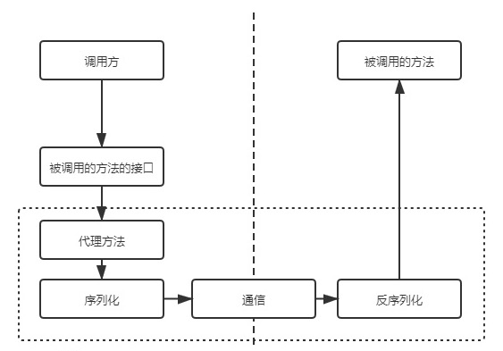

干冰不是冰，水银不是银，纯碱不是碱，熊猫不是猫，鲸鱼不是鱼，双氧水不是水，铅笔芯不是铅。
问题收集
一、问题列表
echo、print、print_r
- echo不是函数，没有返回值，print是一个函数有返回值。
- print是打印字符，print_r 则是打印复合类型
empty和isset的区别
isset
- isset只能用于变量，检测常量是否已设置可使用defined()函数
- 若变量不存在则返回false
- 若变量存在且其值为null，也返回false
- 若变量存在且值不为null，则返回true
- 同时检查多个变量时，每个单项都符合上一条要求时才返回true，否则结果为false
- 使用unset()释放变量之后，它将不再是isset()
empty
- empty只能用于变量，传递任何其它参数都将造成Paser error而终止运行。
- 若变量不存在则返回true
- 若变量存在且其值为””、0、”0”、NULL、FALSE、array()、var $var以及没有任何属性的对象，则返回 true
- 若变量存在且值不为””、0、”0”、NULL、FALSE、array()、var $var以及没有任何属性的对象，则返回false
array_key_exists和isset
- isset()对于数组中为
NULL的值不会返回TRUE，而array_key_exists()会。
1
2
3$search_array = array('first' => null, 'second' => 4);
var_dump(isset($search_array['first']));
var_dump(array_key_exists('first', $search_array));- isset()对于数组中为
- include和require的区别
- include产生一个警告并继续执行，而require则导致一个致命错误
- incluce在用到时加载，require在一开始就加载
传值与传引用
- 传值：是把实参的值赋值给行参，那么对行参的修改不会影响实参的值
- 传引用：真正的以地址的方式传递参数传递以后，行参和实参都是同一个对象，对行参的修改将影响实参的值
抽象类和接口
抽象类：一种特殊的，不能被实例化的类，只能作为其他类的父类使用，使用abstract关键字声明。
接口：是一种特殊的抽象类，也是一个特殊的类，使用interface声明。
- 抽象类的继承使用关键字extends，而接口通过implements关键字来实现
- 抽象类中有数据成员，可以实现数据的封装，但是接口没有数据成员
- 抽象类中可以有构造方法，但是接口没有构造方法
- 抽象类的方法可以通过private、protected、public关键字修饰(抽象方法不能是private)，而接口中的方法只能使用public关键字修饰
- 一个类只能继承于一个抽象类，而一个类可以同时实现多个接口
- 抽象类中可以有成员方法的实现代码，而接口中不可以有成员方法的实现代码。
面向接口编程的优缺点
优点：
- 程序结构清晰，使用方便
- 接口经过合理设计后，有利于程序设计的规范化，并可以并行开发，提高工作效率
- 实现了程序的可插拔性，对于不同的需求切换不同的实现，降低了耦合度，随着系统复杂性的提高这个优势会越来越明显
- 允许多重实现，弥补了继承的缺陷
缺点：
- 增加了设计的复杂度，不佳的接口的设计会对所有使用接口的层都有影响，并且并不是所有的程序的都需要使用接口，接口只有在系统的复杂性达到一定程度才能体现出它的优势，否则只是纯粹的增加工作量，当然选择接口是不会错的，这需要自己的衡量
- 可能会降低代码的可复用性
- 可能会降低程序的执行效率
- 封装、继承、多态
- 封装：把对象的属性和行为结合为一个独立的整体，并尽可能隐藏对象的内部实现细节以增加安全性
- 继承：从已有的类中派生出新的类称为子类，子类继承父类的数据属性和行为，并能根据自己的需求扩展出新的行为，提高了代码的复用性
- 多态：一个父类被多个子类继承，父类的某个方法在多个子类中表现出不同的功能。
多重继承的实现：
- 接口
- trait
获取毫秒数
1 | function getMicroSecondTime() { |
使用list函数的两个点：索引数组、下标对应。
不引入第三个变量交换两个变量的值
1 | ① |
- demo
1 | class A |
- 静态变量
1 | function test() { |
- 自增
1 | $i=1;$i=$i++;echo $i; //1 先赋值，然后执行++ |
- foreach
1 | $arr = [1, 2, 3]; |
setcookie：
setcookie('name','tom');var_dump($_COOKIE['name']);位运算：
15|8 =》15 7&6 =》6var_dump('01'==1);count(123);var_dump(count(strlen("http://php.net")));unset只会取消引用，不会销毁值。
对象本身就是引用传递。
null++等于1，null--无影响unset($_COOKIE['cookie_name'])不起作用，将过期时间设置为当前时间-1运算符优先级
- 尽管复制运算
=比其它大多数的运算符的优先级低，PHP仍旧允许类似如下的表达式：if (!$a = foo())，在此例中foo()的返回值被赋给了$a。
- 尽管复制运算
1 | $a = array(2); |
负数和布尔型关系
var_dump(-1 == true);#true执行shell命令
exec("cd /Users/yourname/Desktop && rm -rf rm.txt");查看扩展信息
php --ri package_namephp --ri redis,redis扩展5.1.1版本(当然还有其他的)把3.1.0b版本(同理)中的delete方法换成了del
警惕传引用导致的问题
phalcon操作数据库的几种形式
1 | $bind_params = [ |
浮点数加减运算
- 通过乘100的方式转化为整数加减，然后在除以100转化回来……
- 使用number_format转化成字符串，然后在使用(float)强转回来……
- php提供了高精度计算的函数库，实际上就是为了解决这个浮点数计算问题而生的。
- bcadd — 将两个高精度数字相加
- bccomp — 比较两个高精度数字，返回-1, 0, 1
- bcdiv — 将两个高精度数字相除
- bcmod — 求高精度数字余数
- bcmul — 将两个高精度数字相乘
- bcpow — 求高精度数字乘方
- bcpowmod — 求高精度数字乘方求模，数论里非常常用
- bcscale — 配置默认小数点位数，相当于就是Linux bc中的 * scale=”
- bcsqrt — 求高精度数字平方根
- bcsub — 将两个高精度数字相减
大文件上传
- 修改PHP配置文件
1
2
3. post_max_size = 50M #PHP可接受的最大POST数据
. upload_max_filesize = 50M #文件上传允许的最大值
. max_execution_time = 300 #每个脚本的最大执行时间，秒钟(0则不限制，不建议设0)- 修改Nginx配置文件(http项)
1
. client_max_body_size 50m #客户端最大上传大小 50M
composer安装
- 方式一
1 | php -r "copy('https://getcomposer.org/installer', 'composer-setup.php');" |
注：需要php开启openssl模块，No package 'openssl' found，安装openssl扩展时不带--with-openssl选项
- openssl version
- brew info openssl
- brew install openssl
- export OPENSSL_LIBS=”-L/usr/local/Cellar/openssl@1.1/1.1.1p/lib”
- export OPENSSL_CFLAGS=”-I/usr/local/Cellar/openssl@1.1/1.1.1p/include”
- pkg-config –list-all | grep openssl
- cd /usr/local/Cellar/openssl@1.1/1.1.1d/lib/pkgconfig
- ln -s
pwd/openssl.pc /usr/local/lib/pkgconfig
方式二
- 直接下载composer.phar
- mv ./composer.phar /usr/local/bin/composer
- 测试compser安装是否成功
使用
- composer update orhanerday/open-ai
- composer config -l #查看一下当前项目的composer镜像
- composer list 显示所有命令
- composer show 显示所有包信息
- composer install 在 composer.json 配置中添加依赖库之后运行此命令安装
- composer install –ignore-platform-reqs，Windows下无法安装pctnl扩展，忽略警告安装
- composer install –ignore-platform-reqs
- composer create-project laravel/laravel Laravel –prefer-dist “5.1.*” 创建项目
- composer search packagename 搜索包
- composer update 更新所有包
- composer update monolog/monolog 更新指定包
- composer remove monolog/monolog 移除指定的包
- composer require monolog/monolog 添加指定包
- composer require monolog/monolog:1.19 添加指定包和版本
- composer require monolog/monolog=1.19
- composer require monolog/monolog 1.19
- composer dump-autoload
命令行相关
php -h，常用：php --re redis，查看redis.so扩展相关信息php --ri redis，查看redis.so扩展配置信息php -r 'echo ini_get("extension_dir");'执行php代码，如获取扩展目录php -i | grep configure，查看php信息如查看编译安装选项
自动加载不可用于PHP的CLI交互模式。
set_exception_handler系列函数
register_shutdown_function系列函数
pcntl_fork系列函数
stream_socket_client系列函数
php_sapi_name系列函数以及常量PHP_SAPI
fastcgi_finish_request
parse_str
extension_loaded
编译安装PHP
- 下载源码
sudo wget https://www.php.net/distributions/php-7.1.0.tar.gz - 加压文件
sudo tar -zxvf php-7.1.0.tar.gz - 切换目录
cd php-7.1.0 sudo ./configure --prefix=/usr/local/php/7.1 --enable-fpm，这一步没有问题sudo make && sudo make install，报错
1
2
3ld: symbol(s) not found for architecture x86_64
clang: error: linker command failed with exit code 1 (use -v to see invocation)
make: *** [sapi/cli/php] Error 1解决
ls ~/Library/Developer/Xcode/DerivedDatarm -rf ~/Library/Developer/Xcode/DerivedData/*重新编译安装就好了
编译安装完成后时缺少扩展
编译安装php的时候，很多时候都是最小化安装，即除了必选编译参数外别的都不要，后期根据具体业务安装对应的扩展。复制php源码目录重命名如php-rename，进入到php-rename/ext目录，里面是所有的php扩展，缺少哪个自己安装就行了。此处以mysqli为例大概说一下步骤：
/path/phpize
./configure –with-php-config=/path/php-config
make && make install
修改 php.ini,增加 extension=mysqli.so
重启php-fpm
openssl扩展
假设前期通过brew已经安装了openssl，
brew install openssl，安装在/usr/local/Cellar/openssl/1.0.2r假设已经安装过php7.3，进入源码包
cd /usr/local/src/php-7.3/ext/openssl复制
cp config0.m4 config.m4sudo /usr/local/php/7.3/bin/phpize./configure --with-openssl=/usr/local/Cellar/openssl/1.0.2r --with-php-config=/usr/local/php/7.3/bin/php-configsudo make && sudo make installvim php.iniextension=/path/openssl.so
- 下载源码
交换两个变量
$a = 1;$b = 2;
借助第三个变量
1
2
3$c = $a;
$a = $b;
$b = $c;位运算
1
2
3$a ^= $b;
$b ^= $a;
$a ^= $b;[]用法(PHP7)
1
2$array = array(1,2);
[$array[0], $array[1]] = [$array[1], $array[0]];
$a = ‘xyz’;echo (int)$a;// 0
$str = ‘This_is_a_test_string’;转换成ThisIsATestString
1
2
3
4
5
6
7
8
9
10
11
12
13
14
15
16
17
18
19
20
21
22
23
24
25
26
27
28
29
30
31
32
33
34
35
36
37
38
39
40
41// 方式一
function underline1($str, $ucfirst = true) {
while (($pos = strpos($str , '_')) !== false) {
$str = substr($str , 0 , $pos).ucfirst(substr($str , $pos+1));
}
return $ucfirst ? ucfirst($str) : $str;
}
// 方式二
function underline2($str, $ucfirst = true) {
$arr = explode('_', $str);
foreach ($arr as $k => $v) {
$arr[$k] = ucfirst($v);
}
return $ucfirst ? join('',$arr) : lcfirst(join('',$arr));
}
// 方式三
function underline3($str, $ucfirst = true) {
$str = ucwords(str_replace('_', ' ', $str));
$str = str_replace(' ','',lcfirst($str));
return $ucfirst ? ucfirst($str) : $str;
}
// 方式四
function underline4($str, $ucfirst = true) {
$str = preg_replace('/_([A-Za-z])/e',"strtoupper('$1')",$str);
return $ucfirst ? ucfirst($str) : $str;
}
// 方式五
function underline5($str, $ucfirst = true) {
$str = preg_replace_callback('/([-_]+([a-z]{1}))/i',function($matches) {
return strtoupper($matches[2]);
}, $str);
return $ucfirst ? ucfirst($str) : $str;
}$a = $b = 3;
- $a = 5 && $b++;var_dump($a, $b);//bool(true) int(4)
- $a = 5 || $b++;var_dump($a, $b);//bool(true) int(4)
$arr1 = [1,2,3];$arr2 = [1,4,5];
- print_r(array_merge($arr1, $arr2));
- array_merge() 将一个或多个数组的单元合并起来，一个数组中的值附加在前一个数组的后面，返回作为结果的数组。
- 如果输入的数组中有相同的字符串键名，则该键名后面的值将覆盖前一个值。
- 然而如果数组包含数字键名，后面的值将不会覆盖原来的值，而是附加到后面。
1
2
3
4
5
6
7
8
9Array
(
[0] => 1
[1] => 2
[2] => 3
[3] => 1
[4] => 4
[5] => 5
)- print_r($arr1 + $arr2);
1
2
3
4
5
6Array
(
[0] => 1
[1] => 2
[2] => 3
)- print_r(array_merge($arr1, $arr2));
$arr = [2,5,1,4,9,7,3,8];实现升序排序【冒泡】
类型转换
- $arr = [‘one’ => ‘a’, ‘two’ => null];
- var_dump(isset($arr[‘two’]));// bool(false)
- $arr = [‘one’ => ‘a’, ‘two’ => ‘null’];
- var_dump(isset($arr[‘two’]));// bool(true)
- 键值互换后的结果array_flip()
char与varchar的区别
mysql锁和事务的联系
service层
redis分布式锁
student表(id,name) score表(id,sid,score,subject)，求总分前十的学员
命名空间
抽象类和接口
位运算符
$a & $bAnd（按位与）$a | $bOr（按位或）$a ^ $bXor（按位异或）~ $aNot（按位取反）$a << $bShift left（左移）$a >> $bShift right（右移）
-
语言结构：PHP语言的关键词、语言语法的一部分，它不可以被用户定义或者添加到语言扩展或者库中，可以有也可以没有变量和返回值。
语言结构执行速度快的原因：函数都要先被PHP解析器（Zend引擎）分解成语言结构，所以函数比语言结构多了一层解析器解析，速度就相对慢了。
php中语言结构有哪些
echo()
print()
die()
isset()
unset()
include()
require()
array()
list()
empty()
怎样判断是语言结构还是函数：使用function_exists或php -rf name
语言结构与函数的区别
语言结构比对应功能的函数快
语言结构在错误处理上比较鲁莽，由于是语言关键词，所以不具备再处理的环节
语言结构不能在配置项(php.ini)中禁用，函数则可以
语言结构不能被用做回调函数
list使用
1
2
3
4
5
6
7
8
9
10
11
12
13
14
15
16
17
18
19
20
21
22
23
24
25
26
27
28
29
30
31
32
33
34
35
36
37
38
39
40
41
42
43
44
45
46
47
48例一、连续索引数组
$arr = array("book","pen","paper");
list($a, $b, $c) = $arr;
echo "<pre>";
var_dump($a,$b,$c);
输出：
string(4) "book"
string(3) "pen"
string(5) "paper"
例二、非连续索引数组
$arr = array(
"1" => "book",
"3" => "pen",
"5" => "paper"
);
list($a, $b, $c) = $arr;
var_dump($a,$b,$c);
输出：
NULL
string(4) "book"
NULL
例三、关联数组
$arr = array(
"aaa" => "book",
"bbb" => "pen",
"ccc" => "paper"
);
list($a, $b, $c) = $arr;
var_dump($a,$b,$c);
输出：
NULL
NULL
NULL
例四、混合数组
$arr = array(
"2" => "book",
"bbb" => "pen",
"0" => "paper"
);
list($a, $b, $c) = $arr;
var_dump($a,$b,$c);
输出：
string(5) "paper"
NULL
string(4) "book"
抽象类和接口
- 抽象类
- 定义为抽象的类不能被实例化
- 任何一个类，如果它里面至少有一个方法是被声明为抽象的，那么这个类就必须被声明为抽象的
- 被定义为抽象的方法只是声明了其调用方式(参数)，不能定义其具体的功能实现
- 继承一个抽象类的时候，子类必须定义父类中的所有抽象方法，且这些方法的访问控制必须和父类中一样(或者更为宽松)
- 子类方法的调用方式必须和父类匹配，即类型和所需参数数量必须一致
- 接口
- 使用接口(interface)，可以指定某个类必须实现哪些方法，但不需要定义这些方法的具体内容
- 接口是通过 interface 关键字来定义的，就像定义一个标准的类一样，但其中定义所有的方法都是空的
- 接口中定义的所有方法都必须是公有，这是接口的特性
- 使用 implements 操作符实现一个接口，类中必须实现接口中定义的所有方法，否则会报一个致命错误
- 类可以实现多个接口，用逗号来分隔多个接口的名称
- 实现多个接口时，接口中的方法不能有重名
- 接口也可以继承，通过使用extends操作符
- 类要实现接口，必须使用和接口中所定义的方法完全一致的方式。否则会导致致命错误
- 接口中的方法全部为抽象方法，不用加abstract
- 接口中可以有属性，属性必须为常量
- 接口也可以继承接口，同样用extends关键字
- 对比
- 共同点：抽象类和接口都不能实例化
- 不同点
- 对接口的继承(实现)使用implements，抽象类使用extends
- 接口中不可以声明变量，但可以声明类常量，抽象类中可以声明各种变量
- 接口没有构造函数,抽象类可以有
- 接口中的方法默认为public,抽象类中的方法可以用public, protected,private修饰
- 一个类可以继承(实现)多个接口,但只能继承一个抽象类
- 抽象类可以继承(实现)接口
静态调用非静态方法：静态属性不能通过
$this访问，非静态属性不能通过self和static进行访问，静态方法可以通过$this访问，非静态方法可以通过self和static进行访问。- 静态属性不能通过
$this访问，非静态属性不能通过self和static进行访问 - 静态方法可以通过
$this访问，非静态方法可以通过self和static进行访问
- 静态属性不能通过
1 | class Access |
逻辑运算符短路作用
- 短路与：有假必假，全真为真
- 判断方式：从左到右依次判断，直到出现false为止将不再判断，直接得到结果为false（短路遇false就停）
- 例子
1
2
3
4
5
6
7
8
9
10
11
12
13
14
15
16
17
18
19
20
21
22
23
24
25
26
27
28
29
30$a = 3;
$b = 3;
$a = 5 && $b++;
var_dump($a, $b);// bool(true) int(4)
$a = 3;
$b = 0;
$a = 5 && $b++;
var_dump($a, $b);// bool(false) int(1)
$a = 3;
$b = 3;
$a && $b++;
var_dump($a, $b);// int(3) int(4)
$a = 0;
$b = 1;
var_dump($a && $b++);// bool(false)
var_dump($a, $b);// int(1) int(1)【发生短路】
$a = 1;
$b = 0;
var_dump($a && $b++);// bool(false)
var_dump($a, $b);// int(1) int(1)
$a = 1;
$b = 0;
var_dump($a && ++$b);// bool(true)
var_dump($a, $b);// int(1) int(1)- 短路或：有真必真，全假为假
- 判断方式：从左到右依次判断，直到出现true为止将不再判断，直接得到结果为true
- 例子
1
2
3
4
5
6
7
8
9
10
11
12
13
14
15
16
17
18
19
20
21
22
23
24
25
26
27
28
29
30
31
32
33
34
35
36
37
38
39
40
41$a = 3;
$b = 3;
$a = 5 || $b++;
var_dump($a, $b);// bool(true) int(3)【发生短路】
$a = 0;
$b = 1;
$a || $b++;
var_dump($a, $b);// int(0) int(2)
$a = 0;
$b = 1;
$a = 1 || $b++;
var_dump($a, $b);// bool(true) int(1)【发生短路】
$a = 0;
$b = 1;
$a = 0 || $b++;
var_dump($a, $b);// bool(true) int(2)
$a = 0;
$b = 0;
$a = 0 || $b++;
var_dump($a, $b);// bool(false) int(1)
$a = 0;
$b = 0;
$a = 1 || $b++;
var_dump($a, $b);// bool(true) int(0)【发生短路】
$a = 1;
$b = 0;
$a || $b++;
var_dump($a, $b);// int(1) int(0)【发生短路】
$a = 1;
$b = 2;
if ($a || $b = 5) {
$b++;
}
echo $b;//3【发生短路】
注:赋值运算符
=优先级高于逻辑运算符andor
后期静态绑定
PHP内核包括3个模块：PHP内核、zend引擎、PHP扩展层。php内核用于处理请求、文件流、错误处理等相关处理，zend引擎将源文件转换成机器语言(opcodes)，然后在zend虚拟机上运行，PHP扩展层是一组函数、类库和流，PHP使用它们来执行一些特定的操作。其中，zend引擎由两个部分组成：编译器和执行器。编译器负责将php代码编译为可执行的opcode，执行器负责将执行编译器输出的opcode。当PHP拿到一段代码后，经过词法解析、语法解析等阶段后，源程序会被翻译成一个个指令(opcode)，然后ZEND虚拟机顺次执行这些指令完成操作。
基本数据类型
- 总览
| 类型 | 说明 |
|---|---|
| Boolean | 布尔类型 |
| Integer | 整型 |
| Float | 浮点型 |
| String | 字符串 |
| Array | 数组 |
| Object | 对象 |
| Resource | 资源类型 |
| NULL | 无类型 |
| Callback/Callable | 回调类型，又称为可调用类型 |
- 分类
- 9种原始数据类型
- 四种标量类型：
- boolean(布尔型)
- integer(整型)
- float(浮点型，也称作double)
- string(字符串)
- 三种复合类型：
- array(数组)
- object(对象)
- callable(可调用)
- 两种特殊类型：
- resource(资源)
- NULL(无类型)
- 四种标量类型：
- 为了确保代码的易读性引入了一些伪类型
- mixed(混合类型)
- number(数字类型)
- callback(回调类型，又称为callable)
- array|object(数组|对象类型)
- void (无类型)
- $…(伪变量)
- 9种原始数据类型
模拟post请求
- 使用curl函数
1
2
3
4
5
6
7
8
9
10
11
12
13
14
15
16
17
18
19
20
21
22
23
24
25
26
27
28
29
30
31
32# 方式一
function curl_post($url='', $postdata='',$options=array())
{
$fields_string = http_build_query($postdata);
$ch = curl_init($url);
curl_setopt($ch, CURLOPT_RETURNTRANSFER, true);
curl_setopt($ch, CURLOPT_POST, true);
curl_setopt($ch, CURLOPT_POSTFIELDS, $fields_string);
// curl_setopt($ch, CURLOPT_POSTFIELDS, $postdata);
curl_setopt($ch, CURLOPT_TIMEOUT, 5);
if (!empty($options)){
curl_setopt_array($ch, $options);
}
$data = curl_exec($ch);
curl_close($ch);
return $data;
}
# 方式二
function curl_post_one($url, $post) {
$options = array(
CURLOPT_RETURNTRANSFER => true,
CURLOPT_HEADER => false,
CURLOPT_POST => true,
CURLOPT_POSTFIELDS => $post,
);
$ch = curl_init($url);
curl_setopt_array($ch, $options);
$result = curl_exec($ch);
curl_close($ch);
return $result;
}- 使用file_get_contents函数
1
2
3
4
5
6
7
8
9
10
11function file_get_contents_post($url, $post) {
$options = array(
'http' => array(
'method' => 'POST',
'content' => http_build_query($post),
'header'=>"Content-Type: application/x-www-form-urlencoded"
),
);
$result = file_get_contents($url, false, stream_context_create($options));
return $result;
}- 使用socket
1
2
3
4
5
6
7
8
9
10
11
12
13
14
15
16
17
18
19
20
21
22
23
24
25
26
27
28
29
30function socket_post($url, $post) {
$urls = parse_url($url);
if (!isset($urls['port'])) {
$urls['port'] = 80;
}
$fp = fsockopen($urls['host'], $urls['port'], $errno, $errstr);
if (!$fp) {
echo "$errno, $errstr";
exit();
}
$post = http_build_query($post);
$length = strlen($post);
$header = <<<EOT
<span class="Apple-tab-span" style="white-space:pre"> </span>POST {$urls['path']} HTTP/1.1
<span class="Apple-tab-span" style="white-space:pre"> </span>Host: {$urls['host']}
<span class="Apple-tab-span" style="white-space:pre"> </span>Content-Type: application/x-www-form-urlencoded
<span class="Apple-tab-span" style="white-space:pre"> </span>Content-Length: {$length}
<span class="Apple-tab-span" style="white-space:pre"> </span>Connection: close
<span class="Apple-tab-span" style="white-space:pre"> </span>{$post}
<span class="Apple-tab-span" style="white-space:pre"> </span>
EOT;
fwrite($fp, $header);
$result = '';
while (!feof($fp)) {
$result .= fread($fp, 512);
}
$result = explode("\r\n\r\n", $result, 2);
return $result[1];
}- 使用fgets函数模拟get请求
1
2
3
4
5
6
7$fp = fopen($getUrl, 'r');
stream_get_meta_data($fp);
$data = '';
while (!feof($fp)) {
$data .= fgets($fp, 1024);
}
fclose($fp);数据类型转换
- 任何类型都可以转为NULL，通过(unset)$var转换。
1
2
3
4在下列情况下一个变量被认为是 NULL：
A. 被赋值为 NULL;
B. 尚未被赋值;
C. 被 unset()。- 其他类型转为布尔类型boolean，根据原值的true、false决定转换后的结果，比如资源类型、对象转为true等。
1
2
3
4
5
6
7以下值会被认为是false：
A. 布尔值false本身；
B. 整数0；
C. 浮点型0.0；
D. 字符串"0"；
E. 空字符串（非空格），如：""、''；
F. NULL；- 其他类型转为整型
1
2
3
4
5
6
7
8
9
10
11
12
13
14字符串转换数值，如果该字符串没有包含 '.'，'e' 或 'E'
并且其数字值在整型的范围之内(由PHP_INT_MAX 所定义)，
该字符串将被当成 int 来取值，
其它所有情况下都被作为 float 来取值。
以下为具体规则：
A. NULL：转为0；
B. 布尔型：false转为0，true转为1；
C. 浮点型：向下取整，比如(int)1.9转为1；
D. 字符串：如果字符串以合法的数值开始，则使用该数值，否则为0；合法的数值有可选的正负号，后面跟一个或多个数字，可能有小数点，再跟可选的指数部分组成；
var_dump('09:00' > '8:00');// bool(false)
var_dump('09:00' > '08:00');// bool(true)
E. 数组：非空数组转为1，空数组转为0；
F. 对象：把对象转为1；
G. 资源：转为分配给这个资源的唯一编号。- 其他类型转为浮点型,除了字符串类型外，其他类型转换规则与整型基本一致
- 其他类型转为字符串
1
2
3
4
5
6
7
8以下是具体转换规则：
A. NULL/FALSE：转为空字符串；
B. TRUE：转为“1”；
C. 整型：原样转为字符串
D. 浮点：原样转为字符串；
E. 数组：转为“Array”，会报Notice错误；
F. 对象：PHP版本大于4将报错；
G. 资源：转为“Resource id #xxx”，xxx 是 PHP 在运行时分配给该资源的唯一值。1
2
3
4
5
6
7
8
9
10
11
12
13
14
15$a = 1;
var_dump((string)$a);//string(1) "1"
$b = 0;
var_dump((string)$b);//string(1) "0"
$c = -1;
var_dump((string)$c);//string(2) "-1"
$d = 1.22222;
var_dump((string)$d);//string(7) "1.22222"
$e = 4.1E+6;//同写法4.1E3,E可小写
var_dump($e);//float(4100000)
var_dump((string)$e);//string(7) "4100000"
其他类型转为数组
1
2
3
4
5
6
7
8A. null 转为空数组，count((array)null) == 0;
B. 如果将一个 integer、float、string、boolean、resource 类型转为数组，则将得到一个仅有一个元素的数组，其下标为0，该元素为此标 量的值。
换句话说，(array)$a相当于array($a)。
C. 如果将一个object类型转为array，则结果为一个数组,数组元素为该对象的全部属性(无方法)，包括public、private、protected，其中：
public 的属性不变，
private 属性转换后的key加上了该类名的前缀，
protected 属性的key加上了“*”作为前缀，这个前缀是类编译生成属性就已经加上了.
1
2
3
4
5
6
7
8
9
10
11
12
13
14
15
16
17
18
19
20
21
22
23
24
25
26
27
28
29
30
31
32
33
34
35
36
37
38
39
40
41
42
43
44
45
46
47
48
49
50
51
52
53
54
55
56
57
58
59
60
61
62
63
64
65
66
67
68
69
70
71
72
73
74
75
76$a = 1;
print_r((array)$a);
输出：
Array
(
[0] => 1
)
$a = 0;
print_r((array)$a);
输出：
Array
(
[0] => 0
)
$a = null;
print_r((array)$a);
输出：
Array
(
)
$a = true;
print_r((array)$a);
输出：
Array
(
[0] => 1
)
$a = false;
var_dump((array)$a);
输出：
array(1) {
[0]=>
bool(false)
}
$a = 'aaa';
print_r((array)$a);
输出：
Array
(
[0] => aaa
)
class Test{
public $public_var = 456;
private $private_var = 123;
protected $protected_var = 789;
public function go()
{
echo 'go !';
}
private function eat()
{
echo 'eat !';
}
protected function sleep()
{
echo 'sleep !';
}
}
$obj = new Test();
echo "<pre>";print_r((array)$obj);
输出：
Array
(
[public_var] => 456
[Testprivate_var] => 123
[*protected_var] => 789
)其他类型转换为对象
1
2
3
4其他任何类型的值被转换为对象，将会创建一个内置类stdClass的实例：
A. 如果该值为NULL，则新的实例为空；
B. array转为object将以键名成为属性名并具有相对应的值，数值索引的元素也将转为属性，但是无法通过“->”访问，只能遍历获取；
C. 对于其他值，会以“scalar”作为属性名。
- PSR：PSR是
PHP Standards Recommendation的简称，译为PHP标准规范，它是php-fig组织制定的一套规范,中文地址。其目的是通过框架作者或者框架的代表之间讨论，以最低程度的限制，制定一个协作标准，各个框架遵循统一的编码规范，避免各家自行发展的风格阻碍了PHP的发展，解决这个程序设计师由来已久的困扰。
目前已表决通过了6套标准，已经得到大部分PHP框架的支持和认可：
- PSR-0:自动加载规范(已废弃)，中文地址
- PSR-1:基础编码规范，中文地址
- PSR-2:编码风格规范，中文地址
- PSR-3:日志接口规范，中文地址
- PSR-4:自动加载规范，中文地址
- PSR-6:缓存接口规范，中文地址
代码优化
- save()、update()的使用
1
2
3
4
5
6
7
8
9
10
11
12
13
14
15
16
17
18
19## 通过设置对象属性来保存或添加数据，而不是直接传一个数组进去
$data['id'] = 123;
$data['name'] = 'new_name';
$this->save($data);//不推荐写法，别人调用时不知道$data的具体内容
$this->id = 123;
$this->name = "new_name";
$this->save();//推荐写法
$data['id'] = 123;
$data['name'] = 'new_name';
$data['modified'] = '2019-01-31 10:10:10';
$this->update($data);//不推荐写法，别人调用时不知道$data的具体内容
$obj = $this->findFirst("id = '{$id}'");
$obj->name = '123';
$obj->modified = '2019-02-11 10:10:10';
$obj->update();//推荐写法
原先代码
1
2
3
4
5
6
7
8
9
10
11
12
13
14
15
16
17
18
19
20
21
22
23
24
25
26
27
28
29
30
31
32
33
34
35
36
37
38
39
40
41
42
43
44
45
46
47
48
49
50
51
52
53
54
55
56
57
58
59
60
61
62
63
64
65
66
67
68
69
70
71
72
73
74
75
76
77
78
79
80
81
82
83
84
85
86
87
88
89
90
91
92
93
94
95
96
97
98
99
100
101
102
103
104
105
106
107
108
109
110
111
112
113
114
115class ExternLoginController extends AppController {
public function beforeFilter() {
$this->loadModel('ExternLogin');
}
/**
*
* 外部机构登录
* ----------------------------------------------------------
* @access public
* ----------------------------------------------------------
* @author someone <someone@email.com>
* ----------------------------------------------------------
* @date 2017-05-24 14:35:36
* ----------------------------------------------------------
*/
public function index(){
$this->layout = false;
$query = $_REQUEST;
$token = $query['token'];
$code = $query['code'];
$data = unserialize(self::decrypt($token,$code));
// 解密失败
if (!$data) {
$result = ['status' => false,'code' => 4001];
echo json_encode($result);
exit;
}
$identify = $data['identify'];
$goods_id = $data['goods_id'];
// 查询班级信息
if (isset($goods_id) && !empty($goods_id)) {
$req['goods_id'] = $goods_id;
$goods = $this->ExternLogin->getExternGoodsById($req);
if (empty($goods['result'])) {
$result = ['status' => false,'code' => 4002];
echo json_encode($result);
exit;
}
$goods_id = $goods['result']['goods_id'];
$cid = $goods['result']['course_id'];
$cate_level = $goods['result']['cate_level'];
}
// 根据员工ID获取商家、会员ID
$post['employee_id'] = $data['employee_id'];
$login_res = $this->ExternLogin->getMerchantAndMemberIdByEmployeeId($post);
if (empty($login_res['result'])) {
$result = ['status' => false,'code' => 4003];
echo json_encode($result);
exit;
}
// 拼装url参数，请求会员登录方法写入相应session
$token = '3B166iwrt1Tzi8LDacCLaXHDqWtE7gVagmjwsu8ZeNHLq76ZtYvWetUan6O1';
$sign = base64_encode($login_res['member_id'] . $token);//数据签名
$mid = base64_encode($login_res['member_id']);
$merchant_id = base64_encode($login_res['merchant_id']);
$host = $_SERVER['REQUEST_SCHEME'] .'://'.$_SERVER['HTTP_HOST'];
$sync_url = "{$host}/USyncLogins/login?t={$token}&mid={$mid}&merchant_id={$merchant_id}&s={$sign}& extern=1";
$script = "<script type='text/javascript' src='{$sync_url}'></script>";
// 根据请求标识跳转到对应页面
$jump_url = '';
$common_url = '?reference=aixuexi&';
if($identify == 'addstudent') {
$jump_url = $common_url . 'name=添加学员&path=/Students/add';
} else if ($identify == 'checkstudent') {
$jump_url = $common_url . 'name=查看学员&path=/Students/index';
} else if ($identify == 'addotmclass') {
$jump_url = $common_url . 'name=添加班级&path=/GoodsClassOtms/add';
} else if ($identify == 'otmclassstudent') {
$jump_url = $common_url . "name=班级名单&path=/GoodsClassOtms/signUpList/gid:{$goods_id}/op:2/cid: {$cid}/cate_level:{$cate_level}/status:2";
} else if ($identify == 'checkotmclass') {
$jump_url = $common_url . 'name=查看班级&path=/GoodsClassOtms/index';
} else {
$jump_url = '';
}
$script .= "<script>window.location.href = '/Homes/index{$jump_url}'</script>";
die($script);
}
/**
* 加密
* ----------------------------------------------------------
* @access public
* ----------------------------------------------------------
* @author someone <someone@email.com>
* ----------------------------------------------------------
* @date 2017-05-24 14:35:36
* ----------------------------------------------------------
*/
public static function encrypt($key, $data, $iv = '') {
// ...
}
/**
* 解密
* ----------------------------------------------------------
* @access public
* ----------------------------------------------------------
* @author someone <someone@email.com>
* ----------------------------------------------------------
* @date 2017-05-24 14:35:36
* ----------------------------------------------------------
*/
public static function decrypt($key, $data, $iv = '') {
// ...
}
}优化后代码
1
2
3
4
5
6
7
8
9
10
11
12
13
14
15
16
17
18
19
20
21
22
23
24
25
26
27
28
29
30
31
32
33
34
35
36
37
38
39
40
41
42
43
44
45
46
47
48
49
50
51
52
53
54
55
56
57
58
59
60
61
62
63
64
65
66
67
68
69
70
71
72
73
74
75
76
77
78
79
80
81
82
83
84
85
86
87
88
89
90
91
92
93
94
95
96
97
98
99
100
101
102
103
104
105
106
107
108
109
110
111
112
113
114
115
116
117
118
119
120
121
122
123
124
125
126
127
128
129
130
131
132class ExternLoginController extends AppController {
/**
* 调用者
*
* @var string
*/
private $caller = null;
public function beforeFilter()
{
$this->loadModel('ExternLogin');
}
/**
*
* 外部机构登录
* ----------------------------------------------------------
* @access public
* ----------------------------------------------------------
* @author someone <someone@email.com>
* ----------------------------------------------------------
* @date 2017-05-24 14:35:36
* ----------------------------------------------------------
*/
public function index()
{
$this->layout = false;
// 获取URL参数，【若用$this->get()会把url参数中的字符+替换成空格】
$query = $_REQUEST;
$this->caller = $query['caller'];
$req_token = $query['token'];
$req_code = $query['data'];
// 调用者这判断
$extern_caller = Configure::read('extern_caller');
if (!in_array($this->caller, $extern_caller)) {
// 非法调用
exit(json_encode(['status' => false,'code' => 4000]));
}
// 解密参数
$req_data = json_decode(self::decrypt($req_token, $req_code),true);
if (!$req_data) {
// 数据解密错误
exit(json_encode(['status' => false,'code' => 4001]));
}
// 第三方进入页面地址
$page_tag = $req_data['page_tag'];
$extern_login_redirect_arr = Configure::read('extern_login_redirect');
$redirect_url = isset($extern_login_redirect_arr[$page_tag]) ? $extern_login_redirect_arr[$page_tag] : '';
if (empty($redirect_url)) {
// 非法调用
exit(json_encode(['status' => false,'code' => 4000]));
}
// 根据第三方法传入的user_id获取内部员工账号数据
$login_params['employee_id'] = $req_data['user_id'];
$login_params['caller'] = $this->caller;
$login_res = $this->ExternLogin->getMerchantAndMemberIdByEmployeeId($login_params);
if (empty($login_res['result'])) {
// 账号未绑定或不存在
exit(json_encode(['status' => false,'code' => 4002]));
}
// 进入班级相关页
if (isset($req_data['goods_id']) && !empty($req_data['goods_id'])) {
$redirect_url = $this->getRedirectUrlOtmClassStu($req_data['goods_id'], $redirect_url);
}
// TODO: 未来扩展业务，如：进入人事管理页等等，如果有则在下面像班级那样处理即可
// 内部实现自动登录并跳转
$this->loginAndRedirect($login_res, $redirect_url);
}
/**
* 获取班级详情
* ----------------------------------------------------------
* @param string $goods_id 班级ID
* @param string $redirect_url 页面跳转地址
* ----------------------------------------------------------
* @return string
* ----------------------------------------------------------
* @author someone <someone@email.com>
* ----------------------------------------------------------
* @date 2017-05-24 11:24
*/
private function getRedirectUrlOtmClassStu($goods_id, $redirect_url)
{
$req['goods_id'] = $goods_id;
$req['caller'] = $this->caller;
$goods = $this->ExternLogin->getExternGoodsById($req);
if (empty($goods['result'])) {
// 班级未绑定或不存在
exit(json_encode(['status' => false,'code' => 4003]));
}
$goods = $goods['result'];
return str_replace(['{goods_id}', '{cid}', '{cate_level}'], [$goods['goods_id'], $goods['goods_id'], $goods['goods_id']]);
}
/**
* 登录并跳转
* ----------------------------------------------------------
* 实现逻辑
* 1. 模拟登录以写入相应session
* 2. 跳转指定url
* ----------------------------------------------------------
* @param [type] $login_params
* ----------------------------------------------------------
* @return void
* ----------------------------------------------------------
* @date 2017-05-24 14:50
*/
private function loginAndRedirect($params, $redirect_url)
{
$token = '3B166iwrt1Tzi8LDacCLaXHDqWtE7gVagmjwsu8ZeNHLq76ZtYvWetUan6O1';
$sign = base64_encode($params['member_id'] . $token);//数据签名
$mid = base64_encode($params['member_id']);
$merchant_id = base64_encode($params['merchant_id']);
$host = $_SERVER['REQUEST_SCHEME'] .'://'.$_SERVER['HTTP_HOST'];
$sync_url = "{$host}/USyncLogins/login?t={$token}&mid={$mid}&merchant_id={$merchant_id}&s={$sign}& extern=1";
$script = "<script type='text/javascript' src='{$sync_url}'></script>";
$redirect_url = "?reference={$this->caller}&{$redirect_url}";
$script .= "<script>window.location.href = '/Homes/index{$redirect_url}'</script>";
die($script);
}
}- 优化项
- 方法大括号写法
- 大段if…else逻辑优化
- 大段代码优化成小方法调用
- 优化项
引用返回-自定义函数前面加and符号
- 引用返回用在当想用函数找到引用应该被绑定在哪一个变量上面时。
- 不要用返回引用来增加性能，引擎足够聪明来自己进行优化
- 仅在有合理的技术原因时才返回引用【这。。。】
- 官方demo
1
2
3
4
5
6
7
8
9
10
11
12
13
14
15
16
17
18
19
20
21
22class Foo {
public $value = 42;
public function &getValue() {
return $this->value;
}
public function getValueNone() {
return $this->value;
}
}
$obj = new Foo;
$a = &$obj->getValue();
$b = $obj->getValue();
echo $a,PHP_EOL;
echo $b,PHP_EOL;
$a = 11;
$b = $obj->getValue();
echo $b,PHP_EOL;- 自定义demo
- 通过
$a=test()方式调用函数，只是将函数的值赋给$a而已，因而$a做任何改变都不会影响到函数中的$b - 通过
$a=&test()方式调用函数，作用是将return $b中的$b变量的内存地址与$a变量的内存地址指向了同一个地方，即产生了相当于这样的效果($a=&b;)，所以改变$a的值,也同时改变了$b的值
1
2
3
4
5
6
7
8
9
10
11
12
13
14
15
16
17function &test()
{
static $b = 0;//BZ也有疑问为啥要申明一个静态变量
$b = $b+1;
echo $b, PHP_EOL;
return $b;
}
$a=test();//输出1
$a=5;
$a=test();//输出2
$a=&test();//输出3
$a=5;
$a=test();//输出6自动加载
- 在编写面向对象(OOP)程序时，很多开发者为每个类新建一个PHP文件。这会带来一个烦恼：每个脚本的开头都需要包含(include)一个长长的列表。在PHP5中已经不再需要这样了。spl_autoload_register()函数可以注册任意数量的自动加载器，当使用尚未被定义的类(class)和接口(interface)时自动去加载。通过注册自动加载器，脚本引擎在PHP出错失败前有了最后一个机会加载所需的类。
- 尽管autoload()函数也能自动加载类和接口，但更建议使用spl_autoload_register()函数。spl_autoload_register()提供了一种更加灵活的方式来实现类的自动加载(同一个应用中，可以支持任意数量的加载器，比如第三方库中的)。因此不再建议使用autoload()函数，在以后的版本中它可能被弃用)在PHP7.2.0中已经废弃)。
- Demo
- 类文件A.php B.php
1
2
3
4
5
6
7
8
9
10
11
12
13
14
15class A
{
function test()
{
echo 'A';
}
}
class B
{
function test()
{
echo 'B';
}
}实现
方式1：include或require
1
2
3
4
5
6
7include('A.php');
include('B.php');
$a = new A();
$a->test();
echo PHP_EOL;
$b = new B();
$b->test();方式2：__autoload函数
1
2
3
4
5
6
7
8
9
10function __autoload($class)
{
include($class .'.php');
}
$a = new A;
$a->test();
echo PHP_EOL;
$b = new B;
$b->test();方式3：spl_autoload_register函数
1
2
3
4
5
6
7
8
9
10
11
12
13
14
15
16
17
18
19
20
21
22function my_autoload($class)
{
include $class . '.php';
}
spl_autoload_register('my_autoload');
$a = new A;
$a->test();
echo PHP_EOL;
$b = new B;
$b->test();
或匿名函数
spl_autoload_register(function($class) {
include $class . '.php';
});
$a = new A;
$a->test();
echo PHP_EOL;
$b = new B;
$b->test();方式4：框架常用
1
2
3
4
5
6
7
8
9
10
11
12
13
14
15
16
17class ClassAutoloader
{
public function __construct()
{
spl_autoload_register(array($this, 'loader'));
}
private function loader($className)
{
echo 'Trying to load ', $className, ' via ', __METHOD__, "()\n";
include $className . '.php';
}
}
$autoloader = new ClassAutoloader();
$a = new A();
$b = new B();
__audoload和spl_autoload_register对比
可以按需多次写spl_autoload_register注册加载函数，加载顺序按谁先注册谁先调用。aotuload由于是全局函数只能定义一次，不够灵活,有多个autoload会报错。
SPL函数很丰富，提供了更多功能
spl_autoload_register可以被catch到错误，而__aotuload不能
spl自动加载常用函数
spl_autoload_call：尝试调用所有已注册的__autoload()函数来装载请求类
spl_autoload_extensions：注册并返回spl_autoload函数使用的默认文件扩展名
spl_autoload_functions：返回所有已注册的__autoload()函数
spl_autoload_register：注册给定的函数作为 __autoload 的实现
spl_autoload_unregister：注销已注册的__autoload()函数
spl_autoload：__autoload()函数的默认实现
spl_classes：返回所有可用的SPL类
$_POST, php://input, $_GLOBALS
- 只有Centent-Type的值为application/x-www.form-urlencoded和multipart/form-data两种类型时，$_POST才能获取到数据
- 如果php无法识别Centent-Type类型，也就无法获取请求数据，这个时候，可以用$GLOBALS来获取。
- php://input与$GLOBALS的功能是一样的，php://input需要的内存比较小，并且它不受 php.ini 配置文件的限制。
- 如果Centent-Type的类型为multipart/form-data，使用php://input和$GLOBALS是获取不到数据的，除此之外，php://input都能获取到数据。
- 仅当Centent-Type的类型为application/x-www.form-urlencoded时，使用php://input和$_POST获取到的数据才是一致的。
- 使用方式：使用file_get_contents(‘php://input’)获取请求数据。
博主使用php，有次跟java对接时，java同学说用的post方式发送的请求，php使用$_POST/$_REQUEST获取请求体时格式一直是错的，即把java的请求体当成了key，value字段是空的，最终使用file_get_contents(‘php://input’)才拿到了正确的请求。
编译安装php5.6和7.3区别
- 问题
1
2
3[28-Jun-2019 17:59:11] ERROR: [/usr/local/php/7.3/etc/php-fpm.conf:5] unknown entry 'user'
[28-Jun-2019 17:59:11] ERROR: failed to load configuration file '/usr/local/php/7.3/etc/php-fpm.conf'
[28-Jun-2019 17:59:11] ERROR: FPM initialization failed原因
权限问题，这块儿还有待研究
编译安装php5.6的时候，不知道什么原因，没有
=/usr/local/php/7.3/etc/php-fpm.d目录，7.3有此目录7.3版本php-fpm.conf文件最后一句话
include=/usr/local/php/7.3/etc/php-fpm.d/*.conf解决
修改php-fpm所属用户和组就行了，要跟
nginx的配置文件user yourself staff;保持一致php-fpm.conf最后一句话：
include=/usr/local/php/7.3/etc/php-fpm.d/*.conf修改
include=/usr/local/php/7.3/etc/php-fpm.d目录下的www.conf
1
2user = yourself
group = staffPHP5和PHP7
- php标量类型和返回类型声明
1
2//主要分为两种模式，强制性模式和严格模式：1表示严格类型校验模式，作用于函数调用和返回语句；0表示弱类型校验模式。
declare(strict_types=1)- NULL合并运算符
1
2
3$site = isset($_GET['site']) ? $_GET['site'] : 'wo';
#简写成
$site = $_GET['site'] ??'wo';- 组合运算符
1
2
3
4// 整型比较
print( 1 <=> 1); // 0
print( 1 <=> 2); // -1
print( 2 <=> 1); // 1
常量数组
1
2
3
4
5
6// 使用 define 函数来定义常量数组
define('sites', [
'Google',
'Jser',
'Taobao'
]);匿名类
1
2
3
4
5
6
7
8
9
10
11
12
13
14
15
16
17
18
19
20
21
22
23
24
25interface Logger {
public function log(string $msg);
}
class Application {
private $logger;
public function getLogger(): Logger {
return $this->logger;
}
public function setLogger(Logger $logger) {
$this->logger = $logger;
}
}
$app = new Application;
// 使用 new class 创建匿名类
$app->setLogger(new class implements Logger {
public function log(string $msg) {
print($msg);
}
});
$app->getLogger()->log("我的第一条日志");Closure::call()方法增加，意思向类绑定个匿名函数
1
2
3
4
5
6
7
8
9
10
11
12
13
14
15
16
17class A {
private $x = 1;
}
// 之前版本定义闭包函数代码
$getXCB = function() {
return $this->x;
};
// 闭包函数绑定到类 A 上
$getX = $getXCB->bindTo(new A, 'A');
echo $getX();
// PHP 7+ 代码
$getX = function() {
return $this->x;
};
echo $getX->call(new A);CSPRNG（伪随机数产生器）。
1
2
3引入几个 CSPRNG 函数:
random_bytes() - 加密生存被保护的伪随机字符串。
random_int() - 加密生存被保护的伪随机整数。异常
1
PHP 7 异常用于向下兼容及增强旧的assert()函数。
use语句改变
1
2// 导入同一个namespace下的类简写
use some\namespace\{ClassA, ClassB, ClassC as C};Session选项
1
2
3
4
5
6* session_start()可以定义数组
session_start([
'cache_limiter' => 'private',
'read_and_close' => true,
]);
* 引入了一个新的php.ini设置（session.lazy_write）,默认情况下设置为 true，意味着session数据只在发生变化时才入。PHP7移除的扩展
1
2
3
4mssql
mysql
sybase_ct
ereg
ThinkPHP3和ThinkPHP5
入口文件的绑定：和大多开源PHP框架一样，TP也是个单一入口框架，它所有的请求都通过public/index.php进入，默认访问的是index模块下的Index控制器下的index方法。可以通过
define('BIND_MODULE','home');自动访问home模块，亦或是通过convention.php中有一个auto_bind_module设为true实现自动绑定。URL和路由
5.x版本正式废除【类似/id/1方式可以通过
get获取到id的方法】，严格来讲这样的url是不属于$_GET，5.x版本后可以通过param获取，具体使用可以通过请求部分查询。5.x版本URL访问不再支持普通URL模式，路由也不支持正则路由定义，而是全部改为规则路由配合变量规则(正则定义)的方式。
convention.php文件中通过修改
url_route_on和url_route_must配置，来控制路由是否开启和是否强制使用路由。命名
目录和文件名采用
小写+下划线，并且以小写字母开头类库、函数文件统一以.php为后缀
类文件名均以命名空间定义，并且命名空间的路径和类库文件所在路径一致(包括大小写)
类名和类文件名保持一致，并统一采用驼峰法命名(首字母大写)
函数
系统已经不依赖任何函数，只是对常用的操作封装提供了助手函数
单字母函数废弃，默认系统加载助手函数，具体参见如下
3.2版本 5.0版本 C config E exception G debug L lang T 废除 I input N 废除 D model M db A controller R action，如action(index/user)调用index控制器下的user方法，action(‘index’)调用本控制器下的方法 B 废除 U url W widget S cache F 废除 请求对象Request和响应对象Response
5.0新增了请求对象Request和响应对象Response，Request统一处理请求和获取请求信息，Response对象负责输出客户端或者浏览器响应，获取请求或响应对象的方法如下
通过助手函数request()
1
2$request = request();
var_dump($request);- 通过实例化Request类
1
2
3
4
5
6
7
8
9
10use think\Request;
class Index
{
public function index()
{
$request = Request::instance();
var_dump($request);
}
}- 通过注入Request实例
1
2
3
4
5
6
7
8
9use think\Request;
class Index
{
public function index(Request $request)
{
var_dump($request);
}
}- 控制器
- 应用类库的命名空间统一为app(可修改)而不是模块名
- 控制器的类名默认不带Controller后缀，可以配置开启controller_suffix参数启用控制器类后缀
- 控制器操作方法采用return方式返回数据，而非直接输出
- 废除原来的操作前后置方法
1
2
3
4
5
6
7
8
9
10
11
12
13
14
15
16
17
18
19
20
21
22
23
24
25① 控制器写法
3.2：
namespace Home\Controller;
use Think\Controller;
class IndexController extends Controller
{
public function hello()
{
echo 'hello,thinkphp!';
}
}
5.x：
namespace app\index\controller;
class Index
{
public function index()
{
return 'hello,thinkphp!';
}
}
②控制器命名
3.2：IndexController.class.php
5.x：Index.php- 模板
- 在控制器中正确的输出模板，5.0在控制器中输出模板，使用方法如下：
- 如果继承think\Controller的话可以使用：return $this->fetch(‘index/hello’)
- 如果没有继承think\Controller的话使用：return view(‘index/hello’)
- 模型
- 数据库操作助手函数变化
- M->db
- M(‘User’)->where([‘name’=>’thinkphp’])->find();(3.2)
- db(‘User’)->where(‘name’=>’thinkphp’)->find();(5.0)
- D->model
- D(‘User’)->where([‘name’=>’thinkphp’])->find();
- model(‘User’)->where([‘name’=>’thinkphp’])->find();//或者$UserModel =new User();
- U->url
- M->db
- 数据库操作助手函数变化
- 新版的模型查询增加了静态方法，如；
- User::get(1);
- User::all();
- User::where(‘id’,’>’,10)->find(); 等等
- 自动验证：5.x版本验证使用独立的\think\Validate类或者验证器进行验证，不仅适用于模型，在控制器也可直接调用
- 配置文件
- 异常处理：5.x版本对错误零容忍，默认情况下会对任何级别的错误抛出异常，并且重新设计了异常页面，展示了详尽的错误信息，便于调试。
- 常量：5.x版本废弃了原来的大部分常量定义，仅仅保留了框架的路径常量定义，其余的常量可以使用App类或者Request类的相关属性或者方法来完成，或者自己重新定义需要的常量。废除的常量包括：
REQUEST_METHOD、IS_GET IS_POST、IS_PUT、IS_DELETE、IS_AJAX __EXT__、COMMON_MODULE 、MODULE_NAME、CONTROLLER_NAME、ACTION_NAME、APP_NAMESPACE、APP_DEBUG、MODULE_PATH - 模板继承：模板继承是一项更加灵活的模板布局方式，模板继承不同于模板布局，甚至来说，应该在模板布局的上层。模板继承其实并不难理解，就好比类的继承一样，模板也可以定义一个基础模板(或者是布局)，并且其中定义相关的区块(block)，然后继承(extend)该基础模板的子模板中就可以对基础模板中定义的区块进行重载。因此，模板继承的优势其实是设计基础模板中的区块(block)和子模板中替换这些区块。每个区块由{block} {/block}标签组成。
cgi、fast-cgi、php-cgi、php-fpm
每种动态语言(PHP,Python等)的代码文件需要通过对应的解析器才能被服务器识别，而CGI协议就是用来使解释器与服务器可以互相通信。PHP文件在服务器上的解析需要用到PHP解释器，再加上对应的CGI协议，从而使服务器可以解析到PHP文件。
- CGI(
COMMON GATEWAY INTERFACE)公共网关接口，它的作用就是帮助服务器与web编程语言通信，是为了保证web server传递过来的数据是标准格式的，方便CGI程序(如php-cgi)的编写者。 - 如果一个静态请求如xxx/index.html或/image.png等，那么web server会去文件系统中找到这个文件并发送给浏览
- 如果一个动态请求如xxx/index.php或/index.jsp等，nginx会根据配置文件将这个请求简单处理后交给相应的解析器(如PHP)
- 假如请求的是index.php，nginx会传哪些数据给PHP解析器呢？url要有吧，查询字符串也得有吧，POST数据也要有，HTTP Header不能少吧等等。CGI就是规定要传哪些数据、以什么样的格式传递给后方处理这个请求的协议。
- 当web server收到/index.php这个请求后，会启动对应的CGI程序，这里就是PHP的解析器。接下来PHP解析器会解析php.ini文件，初始化执行环境，然后处理请求，再以CGI规定的格式返回处理后的结果，退出进程。web server再把结果返回给浏览器。
- fast-cgi是用来提高CGI程序性能的，那么CGI程序的性能问题在哪呢？即上文中”PHP解析器会解析php.ini文件，初始化执行环境”这个过程。
- 传统的cgi协议在每次连接请求时都会开启一个进程进行处理，处理完毕会关闭该进程。下次连接请求又要再次开启一个进程进行处理，cgi是一个进程只能处理一个请求，有多少个连接就有多少个cgi进程，过多的进程会消耗资源和内存。
- fast-cgi则是一个进程可以处理多个请求。
- fast-cgi具体是怎么做的呢？首先，fast-cgi会先启一个master进程，解析配置文件，初始化执行环境；然后再启动多个worker进程。当请求过来时master会传递给一个worker，然后立即可以接受下一个请求，这样就避免了重复的工作，效率自然是高。当worker进程不够用时，master进程可以根据配置预先启动几个worker等着；当然空闲worker太多时，也会停掉一些。
- fastcgi只是一种协议(就像http协议一样，apache对它的实现是httpd，nginx对它的实现就叫nginx)，不是进程。
- php-cgi：php的解释器，php-cgi是php提供给web serve也就是http前端服务器的cgi协议接口程序。
- 当每次接到http前端服务器的请求都会开启个php-cgi进程进行处理，开启的php-cgi的过程中会先要重载配置，数据结构以及初始化运行环境。如果更新了php配置，那么就需重启php-cgi才能生效。
- php-cgi只是个CGI程序，本身只能处理请求返回结果，不会管理进程，所以就出现了一些能够调度php-cgi进程的程序，比如由lighthttpd分离出来的spawn-fcgi，再比如php-fpm。
- php-fpm全称为
PHP FastCGI Process Manager，是一个实现了fast-cgi的程序，被PHP官方收了。它不会像php-cgi一样每次连接都会重新开启一个程，处理完请求又关闭这个进程，而是允许一个进程对多个连接进行处理，处理完不会立即关闭这个进程，而是会接着处理下一个连接。 - 它可以说php-cgi的一个管理程序，是对php-cgi的改进。
- php-fpm会开启多个php-cgi程序，并且php-fpm常驻内存，每次web server服务器发连接过来的时候，php-fpm将连接信息分配给下面其中的一个子程序php-cgi进行处理，处理完毕这个php-cgi并不会关闭，而是继续等待一个连接，这也是fast-cgi加速的原理。
- 由于php-fpm是多进程的，而一个php-cgi基本消耗7-25M内存，因此如果连接过多就会导内存消耗过大，引发一些问题，例如nginx里的502错误。
- 参考
- 简单说明CGI和动态请求是什么
- PHP-FPM以及php-cgi, fast-cgi，以及与nginx的关系
- 后记
- cgi：它是一种协议。通过cgi协议，web server可以将动态请求和相关参数发送给专门处理动态内容的应用程序。
- fastcgi：也是一种协议，只不过是cgi的优化版。cgi的性能较烂，fastcgi则在其基础上进行了改进。
- php-cgi：fastcgi是一种协议，而php-cgi实现了这种协议。不过这种实现比较烂。它是单进程的，一个进程处理一个请求，处理结束后进程就销毁。
- php-fpm：是对php-cgi的改进版，它直接管理多个php-cgi进程/线程。也就是说，php-fpm是php-cgi的进程管理器，因此它也算是fastcgi协议的实现。
- cgi进程/线程：在php上，就是php-cgi进程/线程，专门用于接收web server的动态请求，调用并初始化zend虚拟机。
- cgi脚本：被执行的php源代码文件。
- zend虚拟机：对php文件做词法分析、语法分析、编译成opcode，并执行。最后关闭zend虚拟机。
- cgi进程/线程和zend虚拟机的关系：cgi进程调用并初始化zend虚拟机的各种环境。
- CGI(
魔术常量-魔术方法-全局变量
魔术常量(魔术变量)：所谓的魔术常量就是PHP预定义的一些常量，这些常量会随着所在的位置而变化。
__LINE__获取文件中的当前行号。__FILE__获取文件的完整路径和文件名。__DIR__获取文件所在目录。__FUNCTION__获取函数名称（PHP 4.3.0 新加）。__CLASS__获取类的名称（PHP 4.3.0 新加）。__METHOD__获取类的方法名（PHP 5.0.0 新加）。__NAMESPACE__当前命名空间的名称（区分大小写）。__TRAIT__Trait 的名字（PHP 5.4.0 新加）。自 PHP 5.4 起此常量返回 trait 被定义时的名字（区分大小写）。Trait 名包括其被声明的作用区域（例如 Foo\Bar）。魔术方法
__construct():每次创建新对象（实例化对象）时先调用此方法，所以非常适合在使用对象之前做一些初始化工作。- 如果子类中定义了构造函数则不会隐式调用其父类的构造函数
- 要执行父类的构造函数，需要在子类的构造函数中调用 parent::__construct()
- 如果子类没有定义构造函数则会如同一个普通的类方法一样从父类继承(除private)
__destruct():析构函数会在到某个对象的所有引用都被删除或者当对象被显式销毁时执行。- 析构函数在脚本关闭时调用，此时所有的 HTTP 头信息已经发出
- 析构函数即使在使用exit()终止脚本运行时也会被调用,在析构函数中调用 exit()将会中止其余关闭操作的运行
- 如果子类中定义了析构函数则不会隐式调用其父类的析构函数
- 要执行父类的析构函数，必须在子类的析构函数体中显式调用 parent::__destruct()
- 子类如果自己没有定义析构函数则会继承父类(除private)
__call($method, $arg):在对象中调用一个不可访问方法时，__call() 会被调用- public mixed __call(string $name, array $arguments)，$name 参数是要调用的方法名称，$arguments 参数是一个枚举数组，包含着要传递给方法 $name 的参数
__callStatic($method, $arg):在静态上下文中调用一个不可访问方法时，__callStatic() 会被调用。__set($key, $val):在给不可访问属性赋值或属性不存在会被调用。__get($key):读取不可访问属性的值或属性不存在会被调用。__isset($key):当对不可访问属性调用 isset() 或 empty() 时，__isset() 会被调用。__unset($key):当对不可访问属性调用 unset() 时，__unset() 会被调用。__sleep():方法常用于提交未提交的数据，或类似的清理操作。同时，如果有一些很大的对象，但不需要全部保存，这个功能就很好用。serialize() 函数会检查类中是否存在一个魔术方法 __sleep()。如果存在，该方法会先被调用，然后才执行序列化操作。此功能可以用于清理对象，并返回一个包含对象中所有应被序列化的变量名称的数组。如果该方法未返回任何内容，则 NULL 被序列化，并产生一个 E_NOTICE 级别的错误。与之相反，unserialize() 会检查是否存在一个 __wakeup() 方法。如果存在，则会先调用 __wakeup 方法，预先准备对象需要的资源。
__wakeup():经常用在反序列化操作中，例如重新建立数据库连接，或执行其它初始化操作。__toString():用于一个类被当成字符串时回应。例如 echo $obj; 应该显示些什么。此方法必须返回一个字符串，否则将发出一条 E_RECOVERABLE_ERROR 级别的致命错误。__invoke():当尝试以调用函数的方式调用一个对象时，__invoke() 方法会被自动调用。（本特性只在 PHP 5.3.0 及以上版本有效）__set_state($array):自PHP 5.1.0起当调用 var_export() 导出类时，此静态 方法会被调用。本方法的唯一参数是一个数组，其中包含按 array(‘property’ => value, …) 格式排列的类属性。__clone():当复制完成时，如果定义了 __clone() 方法，则新创建的对象（复制生成的对象）中的 __clone() 方法会被调用，可用于修改属性的值（如果有必要的话）。__debugInfo():当调用var_dump()打印对象时被调用（当你不想打印所有属性）适用于PHP5.6版本预定义变量
预定义变量
- 超全局变量
- $php_errormsg — 前一个错误信息
- $HTTP_RAW_POST_DATA — 原生POST数据
- $http_response_header — HTTP 响应头
- $argc — 传递给脚本的参数数目
- $argv — 传递给脚本的参数数组
超全局变量 — 超全局变量是在全部作用域中始终可用的内置变量
- $GLOBALS — 引用全局作用域中可用的全部变量
- $_SERVER — 服务器和执行环境信息
- $_GET — HTTP GET 变量
- $_POST — HTTP POST 变量
- $_FILES — HTTP 文件上传变量
- $_REQUEST — HTTP Request 变量
- $_SESSION — Session 变量
- $_ENV — 环境变量
- $_COOKIE — HTTP Cookies
new self和new static
- 同类中使用
- 初始化父类
1
2
3
4
5
6
7
8
9
10
11
12
13
14
15
16
17class Father
{
public function getNewFather()
{
return new self();
}
public function getNewCaller()
{
return new static();
}
}
$f = new Father();
print get_class($f->getNewFather());//Father
print get_class($f->getNewCaller());//Father- 子类中使用
- 初始化子类
1
2
3
4
5
6
7
8
9
10
11
12
13
14
15
16
17
18class Son1 extends Father
{
}
class Son2 extends Father
{
}
$s1 = new Son1();
$s2 = new Son2();
print get_class($s1->getNewFather());//Father
print get_class($s1->getNewCaller());//Son1
print get_class($s2->getNewFather());//Father
print get_class($s2->getNewCaller());//Son2- 对比
- 区别只有在继承中才能体现出来，如果没有任何继承，那么这两者是没有区别的。
new self()返回同一个类的实例，new static()返回则是由调用者决定的
use、namespace、trait
- namespace
- 在PHP中，命名空间用来解决在编写类库或应用程序时创建可重用的代码如类或函数时碰到的两类问题：
- 用户编写的代码与PHP内部的类/函数/常量或第三方类/函数/常量之间的名字冲突。
- 为很长的标识符名称(通常是为了缓解第一类问题而定义的)创建一个别名(或简短)的名称，提高源代码的可读性。
- 使用方法：
- namespace的定义不区分大小写
- 没有定义命名空间，就理解为使用顶级命名空间，实例化对象时可以在类前加上反斜杠,也可以不加
- 实例化对象带上命名空间时，之间一定用反斜杠字符，而不是顺斜杠
- 类在指定命名空间下， 实例化对象时一定要带上指定的命名空间
- 命名空间声明后的代码便属于这个命名空间，即使有include或require也不影响
- namespace里不包含类名称，即使存在与类名称同名的部分也不代表类
- 一个php文件中可以存在多个命名空间，第一个命名空间前不能有任何代码
- use：允许通过别名引用或导入外部的完全限定名称，是命名空间的一个重要特征。这有点类似于在类unix文件系统中可以创建对其它的文件或目录的符号连接。
- 所有支持命名空间的PHP版本支持三种别名或导入方式：
- 为类名称使用别名
- 为接口使用别名
- 为命名空间名称使用别名
- PHP 5.6开始允许导入函数或常量或者为它们设置别名
- 在PHP中别名是通过操作符
use来实现的 - 闭包可以从父作用域中继承变量，任何此类变量都应该用use语言结构传递进去
1
2
3
4
5
6
7
8
9
10
11
12
13
14
151.使用use
$msg = "hello";
$func = function ($arg) use ($msg) {
return $msg . ' ' . $arg;
};
echo $func('world');
// 输出： hello world
2.不使用use
$msg = "hello";
$func = function ($arg) {
return $msg . ' ' . $arg;
};
echo $func('world');
// 输出：world使用方法:
- use后没有as时，缩短的命名空间默认为最后一个反斜杠后的内容
- 使用use，实例化对象时最前面没有反斜杠
- 没使用use，实例化对象时命名空间最前面有反斜杠
- namespace后不建议加类名，use后可以
- 使用use之前需先require/include进来(autoload除外)
Trait：自
PHP 5.4.0起，PHP实现了一种代码复用的方法，称为TraitTrait 是为类似PHP的单继承语言而准备的一种代码复用机制。Trait为了减少单继承语言的限制，使开发人员能够自由地在不同层次结构内独立的类中复用method。Trait和Class组合的语义定义了一种减少复杂性的方式，避免传统多继承和Mixin类相关典型问题。
Trait和Class相似，但仅仅旨在用细粒度和一致的方式来组合功能。无法通过Trait自身来实例化。它为传统继承增加了水平特性的组合；也就是说，应用的几个Class之间不需要继承。
dingtalk
1 | $result = file_get_contents("http://timor.tech/api/holiday/year"); |
- AES加密
- 高级加密标准(英语：Advanced Encryption Standard，缩写：AES)，在密码学中又称Rijndael加密法，是美国联邦政府采用的一种区块加密标准。这个标准用来替代原先的DES，已经被多方分析且广为全世界所使用。经过五年的甄选流程，高级加密标准由美国国家标准与技术研究院(NIST)于2001年11月26日发布于FIPS PUB 197，并在2002年5月26日成为有效的标准。2006年高级加密标准已然成为对称密钥加密中最流行的算法之一。
- 该算法为比利时密码学家Joan Daemen和Vincent Rijmen所设计，结合两位作者的名字，以Rijndael为名投稿高级加密标准的甄选流程。(Rijndael的发音近于”Rhine doll”)
- 使用
1 | class Security { |
PHP配置文件
- php.ini
- php-fpm.conf
- www.conf
- 修改内存限制
- 默认php-fpm.conf(或www.conf)的选项`php_admin_value[memory_limit] = 32M
未开启，则内存大小限制跟php.ini的选项memory_limit = 128M`保持一致 - 取消php-fpm.conf(或www.conf)的选项`php_admin_value[memory_limit] = 32M`注释，则以php-fpm.conf(或www.conf)配置为准
- 默认php-fpm.conf(或www.conf)的选项`php_admin_value[memory_limit] = 32M
扫码登录
- 登录过程
- 输入url打开web应用
- 选择扫码登录，生成二维码
- 打开app应用，选择扫一扫
- 扫描web端的二维码，出现【确认登录】等字样(若长时间未扫描，则可能会出现二维码过期)
- 点击【确认登录】扫描完成，同时web端登录成功(此过程不一定，有可能需要短信认证等过程)
- 实现过程
- 选择扫码登录后会向服务器发一个生成二维码的请求A
- 服务器拿到请求A后，会随机生成一个uuid(或叫token)，然后加一个过期时间存放起来(如存redis)
- 同时服务器会根据uuid及别的自定义参数生成一个二维码，返回给web应用
- web应用拿到二维码并将其展示给用户以扫描(可以有一些提示性文字)
- 与此同时，web应用会通过轮询或者长轮询的方式向服务器请求登录是否成功
- 另外一边用户打开app应用已是登录状态，通过扫一扫功能打开确认登录页面(通过二维码获取uuid等信息)
- 用户点击确认登录后，app应用会带着uuid和用户信息向服务器发请求，进而服务器拿到uuid和用户信息
- 服务器将uuid和用户账号绑定一起，并设置状态为已登录
- web应用通过轮询方式得知用户已登录，然后跳转到对应页面(此过程不一定，视实现登录的技术而定)，扫码登录完成
学习
- 读官方手册
- 读框架源码
- 实现一个框架
- pthread
- swoole
- register_shutdown_function
- Core Dumps
- class SplFixedArray implements IteratorAggregate, ArrayAccess, Countable, JsonSerializable,SplFixedArray未实现JsonSerializable接口的方法
- 后期静态绑定
rdkafka扩展，需要指定
--with-rdkafka选项sudo ./configure --with-php-config=/usr/local/Cellar/php@8.1/8.1.15/bin/php-config --with-rdkafka=/usr/local/Cellar/librdkafka/2.0.2/
composer中的版本要求
^和~的出现是为了对扩展包进行版本锁定的^表示锁定主版本号~表示锁定次版本号^6.20表示版本的范围是6.20.0到6.99.999~6.20表示版本的范围是6.20.0到6.20.999
-
- @author：标明作者
- @deprecated：即将被废弃，不再推荐使用
- @example：示例
- @inheritdoc：文档继承
- @link，同@see：访问内部方法或类
- @method：方法
- @mixin：
- @param：参数
- @property
- @return
- @see
- @throws
- @var：变量
- @internal
- @version
- @copyright：版权声明
- @license：协议
- @since：从指定版本开始的变动
- @package：命名空间
- @todo：待办
- @uses：使用
- 参考
表单重复提交，参考
- 使用唯一索引
- 使用Token机制
- 使用悲观锁
- 使用乐观锁
- 使用分布式锁
- 使用状态机制
学习资料
PHP优化
用单引号代替双引号来包含字符串
- 因为PHP会在双引号包围的字符串中搜寻变量，单引号则不会。
- 只有ech能这么做，它是一种可以把多个字符串当作参数的“函数”号
类的方法定义成static，速度会提升将近4倍
用i+=1代替i=i+1
echo比print快，并且使用echo的多重参数代替字符串连接，比如 echo $str1,$str1,$str2
在执行for循环之前确定最大循环数，不要每循环一次都计算最大值，最好运用 foreach 代替
注销那些不用的变量尤其是大数组，以便释放内存
尽量避免使用get，set，__autoload
require_once()代价昂贵
include文件时尽量使用绝对路径，因为它避免了PHP去include_path里查找文件的速度，解析操作系统路径所需的时间会更少
如果你想知道脚本开始执行的时刻，使用 $_SERVER[‘REQUEST_TIME’]要好于time()
函数代替正则表达式完成相同功能
strtr > str_replace > preg_replace
如果一个字符串替换函数，可接受数组或字符作为参数，并且参数长度不太长，那么可以考虑额外写一段替换代码， 使得每次传递参数是一个字符， 而不是只写一行代码接受数组作为查询和替换的参数
使用选择分支语句(即switch case)好于使用多个if，else if语句
用
@屏蔽错误消息的做法非常低效，极其低效打开apache的mod_deflate模块，可以提高网页的浏览速度。
数据库连接当使用完毕时应关掉，不要用长连接
foreach效率更高，尽量用foreach代替while和for循环
在方法中递增局部变量，速度是最快的，几乎与在函数中调用局部变量的速度相当
递增一个全局变量要比递增一个局部变量慢2倍
递增一个对象属性(如$this->prop++)要比递增一个局部变量慢3倍
递增一个未预定义的局部变量要比递增一个预定义的局部变量慢9至10倍
仅定义一个局部变量而没在函数中调用它，同样会减慢速度
- PHP大概会检查看是否存在全局变量。
多维数组尽量不要循环嵌套赋值
派生类中的方法运行起来要快于在基类中定义的同样的方法
调用带有一个参数的空函数，其花费的时间相当于执行7至8次的局部变量递增操作
- 类似的方法调用所花费的时间接近于 15 次的局部变量递增操作
Apache解析一个PHP脚本的时间要比解析一个静态HTML页面慢2至10倍
- 多用静态HTML页面，少用脚本
除非脚本可以缓存，否则每次调用时都会重新编译一次。引入一套PHP缓存机制通常可以提升25%至100%的性能，以免除编译开销
- 对运算码(OP code)的缓存很有用，使得脚本不必为每个请求做重新编译
尽量做缓存，可使用memcached
- memcached是一款高性能的内存对象缓存系统，可用来加速动态Web应用程序，减轻数据库负载
当操作字符串并需要检验其长度是否满足某种要求时， 你想当然地会使用 strlen()函数
- 此函数执行起来相当快，因为它不做任何计算，只返回在zval结构中存储的已知字符串长度。但是，由于strlen()是函数，多多少少会有些慢，因为函数调用会经过诸多步骤，如字母小写化(译注：指函数名小写化，PHP 不区分函 数名大小写). 哈希查找，会跟随被调用的函数一起执行
- 在某些情况下你可以使用isset()技巧加速执行你的代码
当执行变量i的递增或递减时，i的递增或递减时，i++会比++i慢一些，这种差异是PHP特有的
- ++i更快是因为它只需要3条指令(opcodes)，$i++则需要4条指令
- 后置递增实际上会产生一个临时变量，这个临时变量随后被递增
- 前置递增直接在原值上递增
并不是事必面向对象(OOP)，面向对象往往开销很大，每个方法和对象调用都会消耗很多内存
并非要用类实现所有的数据结构，数组也很有用
不要把方法细分得过多，仔细想想你真正打算重用的是哪些代码
当你需要时，你总能把代码分解成方法
尽量采用大量的PHP内置函数
如果在代码中存在大量耗时的函数，你可以考虑用C扩展的方式实现它们
评估检验(profile)你的代码
- Xdebug 调试器包含了检验程序，评估检验总体上可以显示出代码的瓶颈
mod_zip可作为Apache模块，用来即时压缩你的数据，并可让数据传输量降低80%
用file_get_contents替代file. fopen. feof. fgets等系列方法
- 注意file_get_contents在打开一个URL文件时候的PHP版本问题
尽量的少进行文件操作
优化Select SQL语句，在可能的情况下尽量少的进行Insert. Update操作
循环内部不要声明变量
多维数组尽量不要循环嵌套赋值;
对 global 变量，应该用完就 unset()掉
Lua
一、安装lua
cd /usr/local/srcsudo wget https://www.lua.org/ftp/lua-5.3.5.tar.gzsudo tar -zxvf lua-5.3.5.tar.gzcd lua-5.3.5sudo make macosx test- 查看下MakeFile文件内容
cat MakeFile
1
2
3
4
5
6
7
8
9
10
11
12
13
14
15
16
17
18
19
20
21
22
23
24
25
26
27
28
29
30
31
32
33
34
35
36
37
38
39
40
41
42
43
44
45
46
47
48
49
50
51
52
53
54
55
56
57
58
59
60
61
62
63
64
65
66
67
68
69
70
71
72
73
74
75
76
77
78
79
80
81
82
83
84
85
86
87
88
89
90
91
92
93
94
95
96
97
98
99
100
101
102
103
104
105
106
107
108
109
110
111
112# Makefile for installing Lua
# See doc/readme.html for installation and customization instructions.
# == CHANGE THE SETTINGS BELOW TO SUIT YOUR ENVIRONMENT =======================
# Your platform. See PLATS for possible values.
PLAT= none
# Where to install. The installation starts in the src and doc directories,
# so take care if INSTALL_TOP is not an absolute path. See the local target.
# You may want to make INSTALL_LMOD and INSTALL_CMOD consistent with
# LUA_ROOT, LUA_LDIR, and LUA_CDIR in luaconf.h.
INSTALL_TOP= /usr/local
INSTALL_BIN= $(INSTALL_TOP)/bin
INSTALL_INC= $(INSTALL_TOP)/include
INSTALL_LIB= $(INSTALL_TOP)/lib
INSTALL_MAN= $(INSTALL_TOP)/man/man1
INSTALL_LMOD= $(INSTALL_TOP)/share/lua/$V
INSTALL_CMOD= $(INSTALL_TOP)/lib/lua/$V
# How to install. If your install program does not support "-p", then
# you may have to run ranlib on the installed liblua.a.
INSTALL= install -p
INSTALL_EXEC= $(INSTALL) -m 0755
INSTALL_DATA= $(INSTALL) -m 0644
#
# If you don't have "install" you can use "cp" instead.
# INSTALL= cp -p
# INSTALL_EXEC= $(INSTALL)
# INSTALL_DATA= $(INSTALL)
# Other utilities.
MKDIR= mkdir -p
RM= rm -f
# == END OF USER SETTINGS -- NO NEED TO CHANGE ANYTHING BELOW THIS LINE =======
# Convenience platforms targets.
PLATS= aix bsd c89 freebsd generic linux macosx mingw posix solaris
# What to install.
TO_BIN= lua luac
TO_INC= lua.h luaconf.h lualib.h lauxlib.h lua.hpp
TO_LIB= liblua.a
TO_MAN= lua.1 luac.1
# Lua version and release.
V= 5.3
R= $V.4
# Targets start here.
all: $(PLAT)
$(PLATS) clean:
cd src && $(MAKE) $@
test: dummy
src/lua -v
install: dummy
cd src && $(MKDIR) $(INSTALL_BIN) $(INSTALL_INC) $(INSTALL_LIB) $(INSTALL_MAN) $(INSTALL_LMOD) $(INSTALL_CMOD)
cd src && $(INSTALL_EXEC) $(TO_BIN) $(INSTALL_BIN)
cd src && $(INSTALL_DATA) $(TO_INC) $(INSTALL_INC)
cd src && $(INSTALL_DATA) $(TO_LIB) $(INSTALL_LIB)
cd doc && $(INSTALL_DATA) $(TO_MAN) $(INSTALL_MAN)
uninstall:
cd src && cd $(INSTALL_BIN) && $(RM) $(TO_BIN)
cd src && cd $(INSTALL_INC) && $(RM) $(TO_INC)
cd src && cd $(INSTALL_LIB) && $(RM) $(TO_LIB)
cd doc && cd $(INSTALL_MAN) && $(RM) $(TO_MAN)
local:
$(MAKE) install INSTALL_TOP=../install
none:
@echo "Please do 'make PLATFORM' where PLATFORM is one of these:"
@echo " $(PLATS)"
@echo "See doc/readme.html for complete instructions."
# make may get confused with test/ and install/
dummy:
# echo config parameters
echo:
@cd src && $(MAKE) -s echo
@echo "PLAT= $(PLAT)"
@echo "V= $V"
@echo "R= $R"
@echo "TO_BIN= $(TO_BIN)"
@echo "TO_INC= $(TO_INC)"
@echo "TO_LIB= $(TO_LIB)"
@echo "TO_MAN= $(TO_MAN)"
@echo "INSTALL_TOP= $(INSTALL_TOP)"
@echo "INSTALL_BIN= $(INSTALL_BIN)"
@echo "INSTALL_INC= $(INSTALL_INC)"
@echo "INSTALL_LIB= $(INSTALL_LIB)"
@echo "INSTALL_MAN= $(INSTALL_MAN)"
@echo "INSTALL_LMOD= $(INSTALL_LMOD)"
@echo "INSTALL_CMOD= $(INSTALL_CMOD)"
@echo "INSTALL_EXEC= $(INSTALL_EXEC)"
@echo "INSTALL_DATA= $(INSTALL_DATA)"
# echo pkg-config data
pc:
@echo "version=$R"
@echo "prefix=$(INSTALL_TOP)"
@echo "libdir=$(INSTALL_LIB)"
@echo "includedir=$(INSTALL_INC)"
# list targets that do not create files (but not all makes understand .PHONY)
.PHONY: all $(PLATS) clean test install local none dummy echo pecho lecho- 查看下MakeFile文件内容
sudo make installlua -v
二、安装php的lua扩展
- 下载扩展包，传送门
- 解压
sudo tar -zxvf lua-2.0.6.tgz - 生成configure文件
sudo /usr/local/php7.1/bin/phpize - 检测，生成MakeFile，指定安装参数
sudo ./configure --with-php-config=/usr/local/php7.1/bin/php-config --with-lua=/usr/local- 不加
--with-lua=/usr/local选项报错
- 不加
1 | checking for lua in default path... found in /usr/local |
- 解决
- 方式一：老老实实地加
--with-lua=/usr/local - 方式二：
sudo cp /usr/local/lib/liblua.a /usr/lib/liblua.a，此命令只在低版本的mac中可用，升级到Catalina后执行报错sudo cp /usr/local/lib/liblua.a /usr/lib/liblua.a cp: /usr/lib/liblua.a: Read-only file system，这是因为 Catalina 分离了系统文件和用户文件，系统文件都被 mount 到了只读分区，当然好处是显而易见的，防止系统文件被恶意篡改，处理方法如下：- 首先，禁止SIP(重启mac，command+r进入恢复模式，打开终端输入命令
csrutil disable) - 重启后在terminal输入
sudo mount -uw /，意思是把分区mount成可写模式，在系统重启后失效 - 执行之前没有权限的操作，如复制、移动文件等
- 重启后再启用SIP(重启mac，command+r进入恢复模式，打开终端输入命令
csrutil enable) - 重新执行
sudo ./configure --with-php-config=/usr/local/php7.1/bin/php-config
- 首先，禁止SIP(重启mac，command+r进入恢复模式，打开终端输入命令
- 方式一：老老实实地加
- 安装
sudo make && sudo make install - 加载扩展
extension=lua.so(extension_dir之前已设置好)
三、使用
1 | $lua = new Lua(); |
四、参考
swoole
一、概念
- Swoole是由C语言开发的php扩展类，由于有着C语言的优势，swoole在内存管理、数据结构、通信协议解析等方面优势明显。它是一个面向生产环境的PHP异步网络通信引擎，使PHP开发人员可以编写高性能的异步并发TCP、UDP、Unix Socket、HTTP、WebSocket服务。Swoole可以广泛应用于互联网、移动通信、企业软件、云计算、网络游戏、物联网（IOT）、车联网、智能家居等领域。 使用PHP+Swoole作为网络通信框架，可以使企业IT研发团队的效率大大提升。
二、安装
- 下载源码包至
/usr/local/src目录下 - 解压
sudo tar -zxvf swoole-4.4.3.tgz - 切换目录
cd swoole-4.4.3 - 运行
sudo /usr/local/php/7.3/bin/phpize命令，生成configure可执行文件 - 运行配置
sudo ./configure --with-php-config=/usr/local/php/7.3/bin/php-config - 安装扩展
sudo make && sudo make install - 修改php.ini文件，增加
extension=/path/swoole.so - 重启php-fpm
- 查看是否安装成功
php7.3 -m，显示swoole则成功
三、参考
Yaf-Yar-Yac
一、概念
- Yaf，全称
Yet Another Framework，一个C语言编写的以PHP扩展形式提供高性能的PHP开发框架，它更快，更轻便，提供了Bootstrap，路由，分发，视图，插件等，是一个全功能的PHP框架。 - Yar，全称
Yet Another RPC Framework，一个C语言编写的PHP扩展的RPC框架，它轻量级，可并行化，支持多种打包协议(msgpack，json，php)。 - Yac，全称
Yet Another Cache，一个一个基于共享内存的高性能的缓存扩展。
二、安装
本身就是以扩展的形式存在，和其他扩展安装没什么区别，自己gg一下就出来了。在php命令行下可通过命令php --ri extension_name获得扩展相关信息：
yaf配置信息
- yaf.environ：环境名称，当用INI作为Yaf的配置文件时，这个指明了Yaf将要在INI配置中读取的节的名字，默认product。
- yaf.library：全局类库的目录路径，默认NULL
- yaf.cache_config：是否缓存配置文件(只针对INI配置文件生效)，打开此选项可在复杂配置的情况下提高性能，默认0。
- yaf.name_suffix：在处理Controller/Action/Plugin/Model的时候，类名中关键信息是否是后缀式，比如UserModel，而在前缀模式下则是ModelUser，默认1。
- yaf.name_separator：在处理Controller，Action，Plugin，Model的时候，前缀和名字之间的分隔符，默认为空，也就是UserPlugin，加入设置为”_”，则判断的依据就会变成:”User_Plugin”，这个主要是为了兼容ST已有的命名规范，默认””。
- yaf.forward_limit：forward最大嵌套深度，默认5。
- yaf.use_namespace：开启的情况下，Yaf将会使用命名空间方式注册自己的类，比如Yaf_Application将会变成Yaf\Application，默认0。
- yaf.use_spl_autoload：开启的情况下，Yaf在加载不成功的情况下，会继续让PHP的自动加载函数加载，从性能考虑，除非特殊情况，否则保持这个选项关闭，默认0。
yar配置信息
- yar.packager string：设置Yar的打包工具，可以是PHP(serialize)，JSON，Msgpack(这个需要编译的时候指定–enable-msgpack).
- yar.debug string：打开的时候，Yar会把请求过程的日志都打印出来(到stderr).
- yar.connect_timeout integer：连接超时(毫秒为单位)
- yar.timeout integer：处理超时(毫秒为单位)
- yar.expose_info bool：如果关闭，则当通过浏览器访问Server的时候，不会出现Server Info信息.
yac配置信息
- yac.enable = 1
- yac.keys_memory_size = 4M ; 4M can get 30K key slots，32M can get 100K key slots
- yac.values_memory_size = 64M
- yac.compress_threshold = -1
- yac.enable_cli = 0 ; whether enable yac with cli，default 0
四、使用
- Yaf
- Yar
1 | //filename operator.php |
- Yac
1 | $yac = new Yac(); |
三、参考
foreach问题
一、基础
php4中引入了foreach结构，这是一种遍历数组的简单方式。相比传统的for循环，foreach能够更加便捷的获取键/值对。在php5之前，foreach仅能用于数组；php5之后，利用foreach还能遍历对象。- 当
foreach开始执行时，数组内部的指针会自动指向第一个单元，这意味着不需要在foreach循环之前调用reset()。 - 由于
foreach依赖内部数组指针，在循环中修改其值将可能导致意外的行为(可以很容易地通过在$value之前加上&来修改数组的元素)。 - 数组最后一个元素的
$value引用在foreach循环之后仍会保留，建议使用unset()来将其销毁(unset只会取消引用，不会销毁值)。(问题就出在这里)
- 当
二、demo
例子
1
2
3
4
5
6
7
8
9
10
11
12
13
14
15
16
17
18$arr = [1, 2, 3];
foreach($arr as &$val);
foreach($arr as $val);
print_r($arr);
期望结果：
Array
(
[0] => 1
[1] => 2
[2] => 3
)
实际结果：
Array
(
[0] => 1
[1] => 2
[2] => 2
)分析
其实，我们可以认为
foreach($arr as $k => $v)结构隐含了如下两个赋值操作，分别将数组当前的’键’和当前的’值’赋给变量$k和$v，具体展开形如：
1 | foreach($arr as $k => $v){ |
根据上述理论，现在我们重新来分析下第一个foreach：
第1遍循环，$v是一个引用，即$v = &$arr[0]，此时$arr变成[1,2,3]
第2遍循环，同理可得：$v = &$arr[1]，$arr变成[1,2,3]
第3遍循环，同理可得：$v = &$arr[2]，$arr变成[1,2,3]
此时并未执行unset($v)操作，$v现在是数组最后一个元素的引用*
随后代码进入了第二个foreach：
第1遍循环，隐含操作$v=$arr[0]被触发，$v仍然是$arr[2]的引用，相当于$arr[2]=$arr[0]，$arr变成[1,2,1]
第2遍循环，$v=$arr[1]，同理($v仍然是$arr[2]的引用)可得：$arr[2]=$arr[1]，$arr变成[1,2,2]
第3遍循环，$v=$arr[2]，同理($v仍然是$arr[2]的引用)可得：$arr[2]=$arr[2]，$arr变成[1,2,2]
三、参考
Guzzle
一、定义
- Guzzle是一个PHP的HTTP客户端，用来轻而易举地发送请求，并集成到我们的WEB服务上。
- 接口简单：构建查询语句、POST请求、分流上传下载大文件、使用HTTP cookies、上传JSON数据等等。
- 发送同步或异步的请求均使用相同的接口。
- 使用PSR-7接口来请求、响应、分流，允许你使用其他兼容的PSR-7类库与Guzzle共同开发。
- 抽象了底层的HTTP传输，允许你改变环境以及其他的代码，如：对cURL与PHP的流或socket并非重度依赖，非阻塞事件循环。
- 中间件系统允许你创建构成客户端行为。
二、使用
依赖
>=PHP 5.5.0- php.ini文件设置allow_url_fopen = On
- cURL >= 7.19.4(可选)
- openssl和zlib扩展(没有此扩展，使用composer安装guzzle的时候也会报错)
安装
composer require guzzlehttp/guzzle:~6.0，6.0版本要求php7.1以上使用
PHPUnit
一、概念
PHPUnit是用于PHP编程语言的单元测试框架。它是xUnit体系结构的一个实例，用于单元测试框架，该框架起源于SUnit并在JUnit中流行。PHPUnit由Sebastian Bergmann创建，其开发托管在GitHub上。
作用
- 通过命令操控测试脚本
- 测试性能
- 测试代码覆盖率
- 自动化的更新测试用例的参数数据
- 各种格式的日志
使用规则
- 一般被测试类的后面加上”Test”,比如要测试的类为Array,则测试用例的命名为ArrayTest。
- 测试类ArrayTest继承于PHPUnit_Framework_TestCase
- 测试方法必须为public权限，都是test开头，或者你也可以选择给其加注释@test来表明该函数为测试函数
- 通过断言方法来对实际值和预期值进行断言，断言方法可以参照手册
二、使用
通过归档文件安装
- 下载归档文件
wget http://phar.phpunit.cn/phpunit.phar - 增加可执行权限
chmod +x phpunit.phar - 全局可执行
sudo mv phpunit.phar /usr/local/bin/phpunit- 若安装两个php版本，则修改
/usr/local/bin/phpunit，修改可执行文件php路径#!/usr/local/bin/php5.6
- 若安装两个php版本，则修改
- 测试安装是否成功
phpunit --version- 本地源码安装了两个版本的php，5.6和7.3，执行完以上步骤不顶球用，一执行就报错
1
2
3
4
5PHP Fatal error: Uncaught PharException: phar "/usr/local/bin/phpunit" has a broken signature in /usr/local/bin/phpunit:27
Stack trace:
#0 /usr/local/bin/phpunit(27): Phar::mapPhar('phpunit-6.5.3.p...')
#1 {main}
thrown in /usr/local/bin/phpunit on line 27- 下载归档文件
通过composer安装
- 全局安装
composer global require phpunit/phpunit - 创建项目
mkdir test - 切换目录
cd test - 初始化
composer init - 引入文件
composer require --dev phpunit/phpunit - 新建测试文件夹
mkdir tests - 新建phpunit.xml为了引入autoload.php
- 全局安装
1 | <phpunit bootstrap="vendor/autoload.php"> |
- 新建测试脚本EqualsTest.php
1 | <?php |
- 执行
../vendor/bin/phpunit EqualsTest.php- 通过归档文件安装时phpunit已建好，默认使用
三、参考
Workerman
一、概念
- Workerman是纯PHP开发框架，需要依赖很多额外的第三方PHP扩展来实现。它是一款开源高性能异步PHP socket即时通讯框架。支持高并发，超高稳定性，被广泛的用于手机app、移动通讯，微信小程序，手游服务端、网络游戏、PHP聊天室、硬件通讯、智能家居、车联网、物联网等领域的开发。支持TCP长连接，支持Websocket、HTTP等协议，支持自定义协议。拥有异步Mysql、异步Redis、异步Http、MQTT物联网客户端、异步消息队列等众多高性能组件。
二、使用
三、参考
断点上传和断点续传
一、定义
二、实现
三、参考
OAuth2.0
一、背景
在OAuth之前，Web或移动应用要访问某些受限制的资源时，一般需要通过输入用户名/密码的形式进行验证，这种形式会带来一些已知的问题。OAuth的出现就是为了解决访问资源的安全性以及灵活性，使得第三方应用对资源的访问或者微服务间的调用更加安全和便捷。
二、实现
- 数据库
- 代码实现
- nginx配置
- 访问
三、参考
一分钟允许请求十次
一、概论
出去面试的时候，问的最多的问题就是高并发相关的，比如针对秒杀、抢购系统，如何保证每个用户只能买一次；再比如高频应用接口，如果不加控制的话别人可以轻易的写一个脚本一直刷接口，从而导致整个服务变慢甚至是拖垮。秒杀、抢购系统方案都是成熟的，可以从产品、前端、后端等多个层面去实现，至于高频接口请求的拦截则仁者见仁智者见智了。比如要求某个接口一分钟只允许请求十次，且要考虑到请求时间的均衡性(如前59秒请求了一次，最后1秒请求了9次)等。
BZ的方案是基于redis的hash实现(也可为别的数据类型)，总的思路就是为每个用户设置一个key，value为请求次数，同时设置ttl为一分钟。考虑到请求时间的均衡性，还需要记录下每一次请求的时间。
1 | uid : {"num" : 1, "modified_at" : 0} |
二、实现
- 假设有三个用户A/B/C，用户ID分别为a/b/c
- 缓存预热，即分别初始化三个用户(项目中可以通过脚本设置，在此通过命令演示)
1 | hmset user_a num 0 modified_at 0 |
- handle代码
1 | require 'vendor/autoload.php'; |
PHP-MongoDB操作
一、环境准备
二、存储图片
- 下载安装驱动库
- composer安装
composer require mongodb/mongodb- 博主安装了多个PHP版本：
/usr/local/php/7.1/bin/php /usr/local/bin/composer require mongodb/mongodb
- 博主安装了多个PHP版本：
- composer安装
- set.php，请求后会在以下两个集合中插入记录
- fs.files
- fs.chunks
1 | <?php |
- get.php
1 | <?php |
三、使用PHP对MongoDB进行CURD操作(原生操作)
$manager = new MongoDB\Driver\Manager('mongodb://localhost:27017');
- 增加数据
1 | // 方式一 |
- 删除数据
1 | // 方式一 |
- 修改数据
1 | // 方式一 |
- 查询数据
1 | // 方式一 |
- 统计
1 | $where = ['name' => '修改']; |
- 索引
1 | // 添加索引 |
四、使用PHP对MongoDB进行CURD操作(基于Composer包mongodb/mongodb操作)
- 安装依赖包
composer require mongodb/mongodb
五、参考
RPC示例
一、概念
RPC是一个完整的远程调用方案，它包括了接口规范+序列化反序列化规范+通信协议等，HTTP只是一个工作在OSI第七层通信协议，HTTP+Restful规范+序列化与反序列化整体构成了一个完整的远程调用方案。

二、示例
- server.php
1 | <?php |
- classes/test.php
1 | <?php |
- client.php
1 | <?php |
- 运行server.php
- 运行client.php
1 | server端： |
三、参考
开发composer包
一、开干
- 注册github账号，配置ssh-key等，此处不再赘述
- 登录github，新建一个仓库，如my-first-packagist
- 回到本机，克隆刚新建的仓库
git clone https://github.com/liusirdotnet/my-first-packagist.git - 切换到仓库目录
cd my-first-packagist - 初始化composer.json文件
composer init
1 | $ composer init |
- 编辑composer.json文件，添加自动加载
1 | "autoload": { |
- 新建
src/Test.php
1 | <?php |
- 生成vendor目录
composer install - 跟src同级目录新建demo.php
1 | require './vendor/autoload.php'; |
- 提交并推送到github
1 | git add . |
发布到packagist
- 注册packagist
- 点击submit
- 将github仓库输入到输入框，Check && Submit
切换到另一个项目目录，安装刚发布的包
composer require liusirdotnet/my-first-packagist，报错
1 | [InvalidArgumentException] |
- 打一个tag并推送到github
1 | git tag -a v1.0 -m 'first tag' |
回到github后台并进入当前仓库，点击
release选项，点击Draft a new release按钮，勾选下面的This is a pre-release，最后点击Publish release按钮切换到另一个项目目录，安装刚发布的包
composer require liusirdotnet/my-first-packagist新建index.php
1 | <?php |
- 设置更新composer包自动更新packagist【github停止此服务了】
- 在packagist后台获取
API Token - 进入当前仓库，点击settings，点击add service，选择packagist，输入表单后添加add service按钮，最后点击Update service
- 在packagist后台获取
Note: GitHub Services have been deprecated. Please contact your integrator for more information on how to migrate or replace a service with webhooks or GitHub Apps.
二、参考
PHP函数
一、数组函数
1 | >>>>>>>>>>>array_chunk |
二、字符串函数
- addcslashes：以 C 语言风格使用反斜线转义字符串中的字符
- addslashes：使用反斜线引用字符串
- stripcslashes：反引用一个使用 addcslashes() 转义的字符串
- stripslashes：反引用一个引用字符串
- bin2hex：函数把包含数据的二进制字符串转换为十六进制值
- hex2bin：转换十六进制字符串为二进制字符串
- chr：返回指定的字符
- chunk_split：将字符串分割成小块
- convert_cyr_string：将字符由一种 Cyrillic 字符转换成另一种
- convert_uudecode：解码一个 uuencode 编码的字符串
- convert_uuencode：使用 uuencode 编码一个字符串
- count_chars：返回字符串所用字符的信
- crc32：计算一个字符串的 crc32 多项式
- crypt：单向字符串散列
- echo：输出一个或多个字符串
- fprintf：将格式化后的字符串写入到流
- get_html_translation_table：返回使用 htmlspecialchars() 和 htmlentities() 后的转换表
- hebrev：将逻辑顺序希伯来文(logical-Hebrew)转换为视觉顺序希伯来文(visual-Hebrew)
- hebrevc：将逻辑顺序希伯来文(logical-Hebrew)转换为视觉顺序希伯来文(visual-Hebrew)，并且转换换行符
- html_entity_decode：Convert HTML entities to their corresponding characters
- htmlentities：将字符转换为 HTML 转义字符
- htmlspecialchars_decode：将特殊的 HTML 实体转换回普通字符
- htmlspecialchars：将特殊字符转换为 HTML 实体
- explode：使用一个字符串分割另一个字符串
- implode：将一个一维数组的值转化为字符串
- join：别名 implode()
- lcfirst：使一个字符串的第一个字符小写
- ucfirst：将字符串的首字母转换为大写
- ucwords：将字符串中每个单词的首字母转换为大写
- strtolower：将字符串转化为小写
- strtoupper：将字符串转化为大写
- levenshtein：计算两个字符串之间的编辑距离
- localeconv：Get numeric formatting information
- trim：去除字符串首尾处的空白字符(或者其他字符)
- ltrim：删除字符串开头的空白字符(或其他字符)
- rtrim：删除字符串末端的空白字符(或者其他字符)
- chop：rtrim() 的别名
- md5_file：计算指定文件的 MD5 散列值
- md5：计算字符串的 MD5 散列值
- metaphone：Calculate the metaphone key of a string
- money_format：将数字格式化成货币字符串
- nl_langinfo：Query language and locale information
- nl2br：在字符串所有新行之前插入 HTML 换行标记
- number_format：以千位分隔符方式格式化一个数字
- ord：转换字符串第一个字节为 0-255 之间的值
- parse_str：将字符串解析成多个变量
- print：输出字符串
- printf：输出格式化字符串
- quoted_printable_decode：将 quoted-printable 字符串转换为 8-bit 字符串
- quoted_printable_encode：将 8-bit 字符串转换成 quoted-printable 字符串
- quotemeta：转义元字符集
- setlocale：设置地区信息
- sha1_file：计算文件的 sha1 散列值
- sha1：计算字符串的 sha1 散列值
- similar_text：计算两个字符串的相似度
- soundex：Calculate the soundex key of a string
- sprintf：Return a formatted string
- sscanf：根据指定格式解析输入的字符
- str_getcsv：解析 CSV 字符串为一个数组
- str_replace：子字符串替换
- str_ireplace：str_replace() 的忽略大小写版本
- str_pad：使用另一个字符串填充字符串为指定长度
- str_repeat：重复一个字符串
- str_rot13：对字符串执行 ROT13 转换
- str_shuffle：随机打乱一个字符串
- str_split：将字符串转换为数组
- str_word_count：返回字符串中单词的使用情况
- strcasecmp：二进制安全比较字符串(不区分大小写
- strchr：别名 strstr()
- strrchr：查找指定字符在字符串中的最后一次出现
- strstr：查找字符串的首次出现
- stristr：strstr() 函数的忽略大小写版本
- strcmp：二进制安全字符串比较
- strcoll：基于区域设置的字符串比较
- strcspn：获取不匹配遮罩的起始子字符串的长度
- strip_tags：从字符串中去除 HTML 和 PHP 标记
- strpos：查找字符串首次出现的位置
- stripos：查找字符串首次出现的位置(不区分大小写)
- strripos：计算指定字符串在目标字符串中最后一次出现的位置(不区分大小写)
- strrpos：计算指定字符串在目标字符串中最后一次出现的位置
- strlen：获取字符串长度
- strnatcasecmp：使用“自然顺序”算法比较字符串(不区分大小写)
- strnatcmp：使用自然排序算法比较字符串
- strncasecmp：二进制安全比较字符串开头的若干个字符(不区分大小写)
- strncmp：二进制安全比较字符串开头的若干个字符
- strpbrk：在字符串中查找一组字符的任何一个字符
- strrev：反转字符串
- strspn：计算字符串中全部字符都存在于指定字符集合中的第一段子串的长度。
- strtok：标记分割字符串
- strtr：转换指定字符
- substr_compare：二进制安全比较字符串(从偏移位置比较指定长度)
- substr_count：计算字串出现的次数
- substr_replace：替换字符串的子串
- substr：返回字符串的子串
- vfprintf：将格式化字符串写入流
- vprintf：输出格式化字符串
- vsprintf：返回格式化字符串
- wordwrap：打断字符串为指定数量的字串
三、ob函数
概念
当PHP脚本有输出时，输出控制函数可以用这些来控制输出。这在多种不同情况中非常有用，尤其是用来在脚本开始输出数据后，发送http头信息到浏览器。输出控制函数不影响由header()或setcookie()发送的文件头信息，仅影响像echo这样的函数和PHP代码块间的数据。
常用函数
| 函数名称 | 含义 |
|---|---|
| ob_start(); | 打开一个输出缓冲区，所有的输出信息不再直接发送到涉猎器，而是保存在输出缓冲区里面 |
| ob_clean(); | 删除内部缓冲区的内容，不关闭缓冲区(不输出) |
| ob_end_clean() | 删除内部缓冲区的内容，关闭缓冲区(不输出) |
| ob_get_clean() | 返回内部缓冲区的内容，关闭缓冲区。相当于执行ob_get_contents()和ob_end_clean() |
| flush(); | 将ob_flush释放出来的内容，以及不在PHP缓冲区中的内容，整个输出至涉猎器；刷新内部缓冲区的内容，并输出 |
| ob_flush(); | 发送内部缓冲区的内容到涉猎器，删除缓冲区的内容，不关闭缓冲区 |
| ob_end_flush() | 发送内部缓冲区的内容到涉猎器，删除缓冲区的内容，关闭缓冲区 |
| ob_get_flush() | 返回内部缓冲区的内容，并关闭缓冲区，再释放缓冲区的内容。相当于ob_end_flush()并返回缓冲区内容 |
| ob_get_contents() | 返回缓冲区的内容，不输出 |
输出控制存在的意义：因为http协议的限制(前几行必须是协议信息，然后一个空行，然后才是用户需要的内容，需要保证header信息在其他内容之前发送，否则浏览器无法解析服务器返回的内容。
demo
1 | #ob_start |
四、常见函数对比
- 安全函数使用
真题：怎么在代码类的网站存储类似的脚本
<script>window.location.href='http://www.baidu.com'</script>！
- html_entity_decode
- htmlentities
- addslashes
- stripslashes
- htmlspecialchars
- htmlspecialchars_decode
- strip_tags
- isset-is_null-empty
真题
1
2
3
4
5
6
7
8
9
10
11
12
13
14
15
16
17
18$a = null;
$b = 0;
$c = '';
var_dump(isset($a)); // bool(false)
var_dump(isset($b)); // bool(true)
var_dump(isset($c)); // bool(true)
var_dump(isset($d)); // bool(false)
var_dump(is_null($a)); // bool(true)
var_dump(is_null($b)); // bool(false)
var_dump(is_null($c)); // bool(false)
var_dump(is_null($d)); // bool(true)
var_dump(empty($a)); // bool(true)
var_dump(empty($b)); // bool(true)
var_dump(empty($c)); // bool(true)
var_dump(empty($d)); // bool(true)对比
isset()函数为false的情况
- 变量的值为null
- 未定义的变量
- unset()变量之后
is_null函数为true的情况(和isset相反）
- 变量的值为null
- 未定义的变量
- unset()变量后
empty()函数为true的情况
空字符串false空数组array()NULL0- 浮点数
0.0- 字符串
0.0为false
- 字符串
unset之后的变量字符串0未定义的变量$var没有任何属性的对象
unset()函数，变量的值变为NULL
1 | $a = '123'; |
- 表格
| 对比项 | isset()方法 | empty()方法 | is_null方法 |
|---|---|---|---|
| 空字符串”” | true | ture | false |
| 一个空格” “ | true | false | false |
| FALSE | true | true | false |
| TRUE | true | false | false |
| 空数组array() | true | true | false |
| NULL | false | true | true |
| 字符串”0” | true | true | false |
| 整型0 | true | true | false |
| 浮点型0.0 | true | true | false |
| 未定义的变量$a | false | true | true |
综合
1
2
3
4
5
6
7
8
9
10
11
12
13
14
15
16
17
18
19
20
21
22
23
24
25
26
27
28
29
30
31
32
33
34
35
36
37
38
39
40
41
42$a = "";
$b = " ";
$c = false;
$d = true;
$e = array();
$f = null;
$g = 0;
$h = 0.0;
$i = "0";
var_dump(isset($a)); // bool(true)
var_dump(isset($b)); // bool(true)
var_dump(isset($c)); // bool(true)
var_dump(isset($d)); // bool(true)
var_dump(isset($e)); // bool(true)
var_dump(isset($f)); // bool(false)
var_dump(isset($g)); // bool(true)
var_dump(isset($h)); // bool(true)
var_dump(isset($i)); // bool(true)
var_dump(isset($j)); // bool(false)
var_dump(is_null($a)); // bool(false)
var_dump(is_null($b)); // bool(false)
var_dump(is_null($c)); // bool(false)
var_dump(is_null($d)); // bool(false)
var_dump(is_null($e)); // bool(false)
var_dump(is_null($f)); // bool(true)
var_dump(is_null($g)); // bool(false)
var_dump(is_null($h)); // bool(false)
var_dump(is_null($i)); // bool(false)
var_dump(is_null($j)); // bool(true)
var_dump(empty($a)); // bool(true)
var_dump(empty($b)); // bool(false)
var_dump(empty($c)); // bool(true)
var_dump(empty($d)); // bool(false)
var_dump(empty($e)); // bool(true)
var_dump(empty($f)); // bool(true)
var_dump(empty($g)); // bool(true)
var_dump(empty($h)); // bool(true)
var_dump(empty($i)); // bool(true)
var_dump(empty($j)); // bool(true)特例
1
2
3
4var_dump(empty(0)); // bool(true)
var_dump(empty('0')); // bool(true)
var_dump(empty(0.00)); // bool(true)
var_dump(empty('0.00')); // bool(false) 特殊记忆字符串0.00
- func_num_args-func_get_arg-func_get_args
PHP默认支持按值传递参数，通过引用传递参数以及默认参数，也支持可变长度参数列表，其中可变长度参数列表就主要是通过以下几个函数实现的。
func_num_args
语法
func_num_args(void):int说明：返回调用函数的传入参数个数
- 参数：void，即不需要传参
- 返回值：int型，为传入函数的参数数量
demo
1
2
3
4
5
6
7
8function test()
{
$count = func_num_args();
echo $count;
}
test(1, 2); //2
test(1, 2, 3); //3
func_get_arg
语法
func_get_arg(int $arg_num):mixed说明：返回参数列表的某一项
- 参数：arg_num，参数的偏移量，函数的参数从0开始计数
- 返回值：mixed，返回指定的参数，错误则返回FALSE
demo
1
2
3
4
5
6
7
8
9function test()
{
$one = func_get_arg(0);
$two = func_get_arg(1);
echo $one,PHP_EOL,$two,PHP_EOL;
}
test(1, 2);
当在自定义函数的外面调用的该函数的时候会发出一个警告，或者是当arg_num比实际传入的参数的数目大的时候也会发出一个警告。
func_get_args
语法
func_get_args(void):array说明：返回一个包含函数参数列表的数组
- 参数：void，即不需要传参
- 返回值：array，一个数组，其中每个元素都是目前用户自定义函数的参数列表的相应元素的副本。
demo
1
2
3
4
5
6
7function test()
{
$arg = func_get_args();
print_r($arg);
}
test(1, 2);
在用户自定义函数外调用则会出现错误警告。
get_object_vars和compact
get_object_vars ———— 返回由对象属性组成的关联数组，compact ———— 建立一个数组，包括变量名和它们的值。
array_map、array_filter、array_walk
相同点：都是利用回调函数对数组中每个元素进行操作
不同点
- 返回值
- array_map 返回数组，遍历数组元素调用函数
- array_walk 返回true/false
- array_filter 返回数组，作用是过滤数组中的元素，回调函数返回真才能保存到返回数组中
- 回调函数的参数及顺序
- 是否改变数组的值
- 返回值
demo
1
2
3
4
5
6
7
8
9
10
11
12
13
14
15
16
17
18
19
20
21
22
23
24
25
26
27
28
29
30
31
32
33
34
35
36
37
38
39
40
41
42
43
44
45
46
47
48
49
50
51
52
53
54
55
56
57
58
59
60
61
62
63
64
65
66
67
68
69
70
71
72
73
74
75
76
77
78
79
80
81
82
83
84$num = array(0, 1, 2);
$map = array_map(function ($v) {
return $v == 0 ? 0 : 10;
}, $num);
print_r($map);
输出:
Array
(
[0] => 0
[1] => 10
[2] => 10
)
A.不传回调函数
$filter = array(
'a' => null,
'b' => false,
'c' => 0,
'e' => '',
'd' => 1,
);
$new = array_filter($filter);
print_r($new);
输出：
Array
(
[d] => 1
)
B.传回调函数
$num = array(0,1,2);
$filter = array_filter($num, function($v){
return $v == 0 ? '' : $v;
});
print_r($filter);
输出：
Array
(
[1] => 1
[2] => 2
)
A.传值
$num = array(0, 1, 2);
array_walk($num, function ($v, $k) {
$v++;
});
print_r($num);
输出：
Array
(
[0] => 0
[1] => 1
[2] => 2
)
B.传引用
array_walk($num, function (&$v, $k) {
$v++;
});
print_r($num);
输出：
Array
(
[0] => 1
[1] => 2
[2] => 3
)
C.官网示例
$fruits = array(
'a' => 'apple',
'b' => 'banana',
);
function changeValue(&$item, $key, $prefix) {
$item = "$prefix: $item";
}
function printItem($item, $key) {
echo "$key. $item<br />\n";
}
echo "改变值之前打印：\n";
array_walk($fruits, 'printItem');
array_walk($fruits, 'changeValue', 'fruit');
echo "\n改变值之后打印：\n";
array_walk($fruits, 'printItem');
魔术方法之call和callStatic
定义
__call($method, $arg)，调用不可访问或不存在的方法时被调用__callStatic($method, $arg)，调用不可访问或不存在的静态方法时被调用
demo
1
2
3
4
5
6
7
8
9
10
11
12
13
14
15
16
17
18
19
20
21
22
23
24
25
26
27
28
29
30
31
32
33
34
35
36
37
38
39
40
41
42
43
44
45
46
47
48
49
50
51
52
53
54
55
56
57
58
59
60
61
62
63class Person {
private function getPrivateFunc()
{
echo "Private function";
}
private static function getPrivateStaticFunc($arg)
{
echo "Private static function";
}
private static function getProtectedStaticFunc($arg)
{
echo "Private static function";
}
public function __call($method, $arg)
{
return call_user_func_array('print_r', $arg);
}
public static function __callStatic($method, $arg)
{
return call_user_func('print_r', $arg);
}
}
$p = new Person();
$p->getMyFunc([1,2,3]);
$p->getPrivateFunc(1);
Person::getStaticFunc('a');
Person::getPrivateStaticFunc('b');
Person::getProtectedStaticFunc('c');
输出：
Array
(
[0] => 1
[1] => 2
[2] => 3
)
1
Array
(
[0] => a
)
Array
(
[0] => b
)
Array
(
[0] => c
)pack和unpack
五、register_shutdown_function
register_shutdown_function(callable $callback[, mixed $parameter[, mixed $... ]]):void，注册一个callback，它会在脚本执行完成或者exit()后被调用。可以多次调用register_shutdown_function()，这些被注册的回调会按照他们注册时的顺序被依次调用。如果你在注册的方法内部调用 exit()，那么所有处理会被中止，并且其他注册的中止回调也不会再被调用。Note
- 在某些web server(如Apache)上，可以在中止函数内对脚本的工作目录进行修改。
- 如果进程被信号SIGTERM或SIGKILL杀死，那么中止函数将不会被调用。尽管你无法中断SIGKILL，但你可以通过pcntl_signal()来捕获SIGTERM，通过在其中调用exit()来进行一个正常的中止。
基本用法，和别的注册回调没太大差别
1 | function shutdown() |
- 和魔术函数__destruct()对比，
1 | ini_set("max_execution_time", "10"); |
由对比可知，使用register_shutdown_function能保证即使脚本异常中止时，清理函数的代码仍然能够执行。
- 结合进程扩展控制
1 | declare(ticks = 1); |
六、debug_backtrace
用法
debug_backtrace([ int$options = DEBUG_BACKTRACE_PROVIDE_OBJECT[, int $limit = 0 ]]):array- 返回一个包含众多关联数组的array
返回值说明
| 名字 | 类型 | 说明 |
|---|---|---|
| function | string | 当前的函数名。 |
| line | integer | 当前的行号。 |
| file | string | 当前的文件名。 |
| class | string | 当前 class 的名称。 |
| object | object | 当前的 object。 |
| type | string | 当前调用的类型。如果是一个方法，会返回 “->”。如果是一个静态方法，会返回 “::”。 如果是一个函数调用，则返回空。 |
| args | array | 如果在一个函数里，这会列出函数的参数。 如果是在一个被包含的文件里，会列出包含的文件名。 |
- 测试代码
1 | function func1() { |
- 运行
1 | Array |
七、str_replace
功能：子字符串替换
用法：
str_replace(mixed $search, mixed $replace, mixed $subject[, int &$count ]): mixed说明：该函数返回一个字符串或者数组。该字符串或数组是将
subject中全部的search都被replace替换之后的结果。- 如果
search和replace为数组，那么str_replace()将对subject做二者的映射替换，它们的值将会被依次处理。 - 如果
replace的值的个数少于search的个数，多余的替换将使用空字符串来进行。 - 如果
search是一个数组而replace是一个字符串，那么search中每个元素的替换将始终使用这个字符串。
- 如果
参数
- search：查找的目标值，也就是 needle。一个数组可以指定多个目标。
- replace：search 的替换值。一个数组可以被用来指定多重替换。
- subject：执行替换的数组或者字符串。也就是 haystack。如果 subject 是一个数组，替换操作将遍历整个 subject，返回值也将是一个数组。
- count：如果被指定，它的值将被设置为替换发生的次数。
demo
1 | ## 1.简单替换并计数 |
八、函数的参数
- 通过参数列表可以传递信息到函数，即以逗号作为分隔符的表达式列表。参数是从左向右求值的。PHP支持按值传递参数(默认)，通过引用传递参数以及默认参数，也支持可变长度参数列表。
- 不声明参数类型
- 强制声明参数类型
| 参数类型 | 说明 | PHP最小版本支持 |
|---|---|---|
| class/interface name | The parameter must be an instanceof the given class or interface name. | PHP 5.0.0 |
| self | The parameter must be an instanceof the same class as the one the method is defined on. This can only be used on class and instance methods. | PHP 5.0.0 |
| array | The parameter must be an array. | PHP 5.1.0 |
| callable | The parameter must be a valid callable. | PHP 5.4.0 |
| bool | The parameter must be a boolean value. | PHP 7.0.0 |
| float | The parameter must be a floating point number. | PHP 7.0.0 |
| int | The parameter must be an integer. | PHP 7.0.0 |
| string | The parameter must be a string. | PHP 7.0.0 |
- 延伸
- 可变参数
...
- 可变参数
1 | function add(...$numbers) { |
- func_num_args/func_get_arg/func_get_args
1 | function test() { |
工作收集
- 读取url参数
1 | $str = "R0=1&R1=000004&R2=2"; |
- 苹果内购IAP
1 | $url = 'https://buy.itunes.apple.com/verifyReceipt'; |
- 保存文件
1 | $image = [ |
- 保存css文件
1 | function extractLinksFromCss($cssContent) { |
- post请求
1 | function file_get_contents_post($url, $post) { |
- 读取txt文件
- 带下标
1 | $file="list.txt"; |
- 不带下标
1 | $data = []; |